library(ggplot2)
library(dplyr)
library(sf)
library(sp)
library(spData)
library(spgwr)
library(tmap)
library(osmdata)
library(osmextract)
library(spdep)
library(tidyverse)
library(spatstat)
library(terra)
library(dbscan)
library(dodgr)
library(geodist)
library(RColorBrewer)A GIS study of weapon possession crimes in West Midlands County (2023)
Background Information
This is the first page to be uploaded to this website, and more are to follow shortly on other mapping techniques in RStudio, and other social atlas reports.
This project was produced for a coursework assessment as part of my Geography degree at University College London. The aim was to produce a variety of maps to create a ‘social atlas’ of any set of data across an area of the United Kingdom. This particular project studies weapon possession crimes in West Midlands County, and uses a variety of different map types to illustrate this.
Feel free to skip to the maps and analysis of these maps in the report. If you are interested in the coding, design, methodology, and many other choices made, I recommend reading the full report to understand why certain decisions were made in this report.
The main reason weapon possession crimes were chosen for this project was because these have been brought increasingly to the public eye over recent years, with celebrities, such as Idris Elba calling for an “immediate ban on machetes and ‘zombie’ knives”. West Midlands County has the highest rates of weapon possession incidents in the United Kingdom as of 2024, with Birmingham having the highest rates of knife crime in this region.
I would like to thank Professor Justin van Dijk, Lecturer in Social and Geographic Data Science at UCL, for providing assistance and insights to help me create this report, and teaching me some of the techniques used in this report in RStudio. You can visit his website here: https://mappingdutchman.com/.
Data Sources
All spatial boundaries have been downloaded from the ONS Open Geography Portal https://geoportal.statistics.gov.uk/. Boundaries used include: 2021 Lower Super Output Area (LSOA) Boundaries UK, 2023 Local Authority District Boundaries UK, 2018 Metropolitan County Boundaries UK, 2023 Ward Boundaries UK.
Police crime data can be downloaded from https://data.police.uk/data/, and the West Midlands Police Force was selected, and data was downloaded across all months of 2023.
To obtain Index of Multiple Deprivation (IMD) data by LSOA, a free account can be made on the Consumer Data Research Centre website https://data.cdrc.ac.uk/, allowing 2019 IMD scores by LSOA to be downloaded as a .csv file.
To obtain 2021 census data variables (population by LSOA, unemployment by ward), the Nomis website can be used https://www.nomisweb.co.uk/.
Population data from 2020 in raster format, at a 1km resolution for the United Kingdom was downloaded from WorldPop via this link https://hub.worldpop.org/geodata/summary?id=34480.
OpenStreetMap data was downloaded through R using the ‘osmdata’ package.
All of the files used in this report can be found in the folder titled ‘Weapon_Social_Atlas_Files’ on my GitHub page here https://github.com/vmistri91/Portfolio.
Loading Packages
These are all the packages used in this project. The main packages used to create maps using spatial data are ‘sf’, ‘sp’, ‘tmap’.
Data Preparation
Preparation steps undertaken in this section are to create large maps showing crime distribution and other variables of interest across West Midlands County.
Firstly, boundary geopackages need to be loaded and prepared in R.
#Load LSOA 2021 geopackage in
LSOA_eng_2021 <- st_read("2021_LSOA.gpkg")Reading layer `LSOA_2021_EW_BGC_V3' from data source
`C:\Users\vmist\Dropbox\Vishal\Uni Work\Portfolio VM\2021_LSOA.gpkg'
using driver `GPKG'
Simple feature collection with 35672 features and 7 fields
Geometry type: MULTIPOLYGON
Dimension: XY
Bounding box: xmin: 82668.52 ymin: 5352.6 xmax: 655653.8 ymax: 657539.4
Projected CRS: OSGB36 / British National Grid#Inspect CRS
st_crs(LSOA_eng_2021) #=27700Coordinate Reference System:
User input: OSGB36 / British National Grid
wkt:
PROJCRS["OSGB36 / British National Grid",
BASEGEOGCRS["OSGB36",
DATUM["Ordnance Survey of Great Britain 1936",
ELLIPSOID["Airy 1830",6377563.396,299.3249646,
LENGTHUNIT["metre",1]]],
PRIMEM["Greenwich",0,
ANGLEUNIT["degree",0.0174532925199433]],
ID["EPSG",4277]],
CONVERSION["British National Grid",
METHOD["Transverse Mercator",
ID["EPSG",9807]],
PARAMETER["Latitude of natural origin",49,
ANGLEUNIT["degree",0.0174532925199433],
ID["EPSG",8801]],
PARAMETER["Longitude of natural origin",-2,
ANGLEUNIT["degree",0.0174532925199433],
ID["EPSG",8802]],
PARAMETER["Scale factor at natural origin",0.9996012717,
SCALEUNIT["unity",1],
ID["EPSG",8805]],
PARAMETER["False easting",400000,
LENGTHUNIT["metre",1],
ID["EPSG",8806]],
PARAMETER["False northing",-100000,
LENGTHUNIT["metre",1],
ID["EPSG",8807]]],
CS[Cartesian,2],
AXIS["(E)",east,
ORDER[1],
LENGTHUNIT["metre",1]],
AXIS["(N)",north,
ORDER[2],
LENGTHUNIT["metre",1]],
USAGE[
SCOPE["Engineering survey, topographic mapping."],
AREA["United Kingdom (UK) - offshore to boundary of UKCS within 49°45'N to 61°N and 9°W to 2°E; onshore Great Britain (England, Wales and Scotland). Isle of Man onshore."],
BBOX[49.75,-9.01,61.01,2.01]],
ID["EPSG",27700]]#Extract out relevant LSOAs in the West Midlands
LSOA_WestMidlands <- LSOA_eng_2021[grepl('Birmingham|Coventry|Dudley|Sandwell|Solihull|Walsall|Wolverhampton', LSOA_eng_2021$LSOA21NM), ]
#For maps produced to show the 7 local authorities outlined in West Midlands County, Local Authority gpkg is loaded in
LA_eng_2023 <- st_read("Local_Authorities_2023.gpkg")Reading layer `LAD_DEC_2023_UK_BGC' from data source
`C:\Users\vmist\Dropbox\Vishal\Uni Work\Portfolio VM\Local_Authorities_2023.gpkg'
using driver `GPKG'
Simple feature collection with 361 features and 8 fields
Geometry type: MULTIPOLYGON
Dimension: XY
Bounding box: xmin: -116.1928 ymin: 5352.6 xmax: 655653.8 ymax: 1220299
Projected CRS: OSGB36 / British National Grid#Inspect CRS
st_crs(LA_eng_2023) #=27700Coordinate Reference System:
User input: OSGB36 / British National Grid
wkt:
PROJCRS["OSGB36 / British National Grid",
BASEGEOGCRS["OSGB36",
DATUM["Ordnance Survey of Great Britain 1936",
ELLIPSOID["Airy 1830",6377563.396,299.3249646,
LENGTHUNIT["metre",1]]],
PRIMEM["Greenwich",0,
ANGLEUNIT["degree",0.0174532925199433]],
ID["EPSG",4277]],
CONVERSION["British National Grid",
METHOD["Transverse Mercator",
ID["EPSG",9807]],
PARAMETER["Latitude of natural origin",49,
ANGLEUNIT["degree",0.0174532925199433],
ID["EPSG",8801]],
PARAMETER["Longitude of natural origin",-2,
ANGLEUNIT["degree",0.0174532925199433],
ID["EPSG",8802]],
PARAMETER["Scale factor at natural origin",0.9996012717,
SCALEUNIT["unity",1],
ID["EPSG",8805]],
PARAMETER["False easting",400000,
LENGTHUNIT["metre",1],
ID["EPSG",8806]],
PARAMETER["False northing",-100000,
LENGTHUNIT["metre",1],
ID["EPSG",8807]]],
CS[Cartesian,2],
AXIS["(E)",east,
ORDER[1],
LENGTHUNIT["metre",1]],
AXIS["(N)",north,
ORDER[2],
LENGTHUNIT["metre",1]],
USAGE[
SCOPE["Engineering survey, topographic mapping."],
AREA["United Kingdom (UK) - offshore to boundary of UKCS within 49°45'N to 61°N and 9°W to 2°E; onshore Great Britain (England, Wales and Scotland). Isle of Man onshore."],
BBOX[49.75,-9.01,61.01,2.01]],
ID["EPSG",27700]]#Extract out relevant LAs in the West Midlands
LA_WestMidlands <- LA_eng_2023[grepl('Birmingham|Coventry|Dudley|Sandwell|Solihull|Walsall|Wolverhampton', LA_eng_2023$LAD23NM), ]Crime data is downloaded as 12 .csv files for each month of 2023. Before working in R, these files have been placed into a folder called “all-crime” on my PC.
#Load in all 2023 West Midlands Crime Data
all_crime_wm <- list.files(path = "all-crime/", full.names = TRUE, recursive = TRUE) |>
lapply(read_csv) |>
bind_rows()Steps to prepare the crime data by LSOA code and to filter by Possession of weapon crimes:
#Using all crime data and merging by lsoa code
#Aggregation and count
weapon_possession_2 <- all_crime_wm[grepl('Possession of weapons', all_crime_wm$`Crime type`), ]
weapons_LSOA<- aggregate(weapon_possession_2$`Crime ID`, by=list(weapon_possession_2$`LSOA code`,weapon_possession_2$`Crime type`), FUN=length)
#Rename columns
names(weapons_LSOA)<- c("LSOA","Crime","Count")
weapons_LSOA<- spread(weapons_LSOA,Crime, Count)The weapon crime data can be merged to the LSOA spatial file by LSOA code as shown below:
#Merge spatial LSOA file with the aggregated possession of weapons data
WestMidlands_WeaponPossession<- merge(LSOA_WestMidlands, weapons_LSOA, by.x="LSOA21CD", by.y="LSOA", all.x=T)
#Replace all NAs with 0
WestMidlands_WeaponPossession[is.na(WestMidlands_WeaponPossession)] = 0Population data can be loaded in and merged to the WestMidlands_WeaponPossession spatial file with the same method as above:
#Load in population data by LSOA
pop21_lsoa <- read.csv('LSOA2021_population_sa.csv')
#Merge this dataset with the larger spatial dataset above
WestMidlands_WeaponPossession<- merge(WestMidlands_WeaponPossession, pop21_lsoa, by.x="LSOA21CD", by.y="lsoa21_code", all.x=T)
#Replace all NAs with 0
WestMidlands_WeaponPossession[is.na(WestMidlands_WeaponPossession)] = 0IMD data can be loaded in and merged to the WestMidlands_WeaponPossession spatial file with the same method as above:
#Load in IMD dataset
uk_imd_19 <- read.csv('uk_imd2019.csv')
#Merge this dataset with the WestMidlands_WeaponPossession dataset
WestMidlands_WeaponPossession<- merge(WestMidlands_WeaponPossession, uk_imd_19, by.x="LSOA21CD", by.y="LSOA", all.x=T)
#Replace all NAs with 0
WestMidlands_WeaponPossession[is.na(WestMidlands_WeaponPossession)] = 0The variable name ‘Possession of Weapons’ can be shorted to an easy to write variable name which has no spaces.
#Rename Possession of weapons variable to shorter name
colnames(WestMidlands_WeaponPossession)[colnames(WestMidlands_WeaponPossession) == "Possession of weapons"] <- "weapon_possession"A new variable should be created to show the rate of weapon crimes by the population of each LSOA. This is because weapon crimes can not be displayed on a map without accounting for the population/size of LSOAs, as this would make a less accurate map, and many crime tends would be masked. For example, Birmingham city centre LSOAs would have the highest weapon crime counts, but accounting for the population in each LSOA would produce different trends and a more accurate map to show weapon possession crime rates in the county.
#Create new variable to show rate of weapons crime using the pop21 variable and crime variable
WestMidlands_WeaponPossession <- WestMidlands_WeaponPossession |>
mutate(weapon_rate = (weapon_possession/as.numeric(WestMidlands_WeaponPossession$pop2021)) * 10000)In this case, ‘weapon_rate’ is the number of weapon possession crimes in each LSOA per 10000 people.
Creating basic choropleth maps
It is important in this report to know the names of the locations being discussed across West Midlands County, as shown in this map. (Source: https://www.pinterest.co.uk/pin/542261611378585403/).

To test if all of the above code has worked, this basic choropleth map showing weapon possession crime rates across LSOAs in West Midlands County has been created.
tm_shape(WestMidlands_WeaponPossession) +
tm_fill("weapon_rate",
palette = "Blues",
style = "quantile",
n=9,
title = "Rate of possession of weapons crimes") +
tm_borders(alpha=.4) +
tm_layout(legend.text.size = 0.6,
legend.title.size = 1,
frame = FALSE,
legend.outside = TRUE)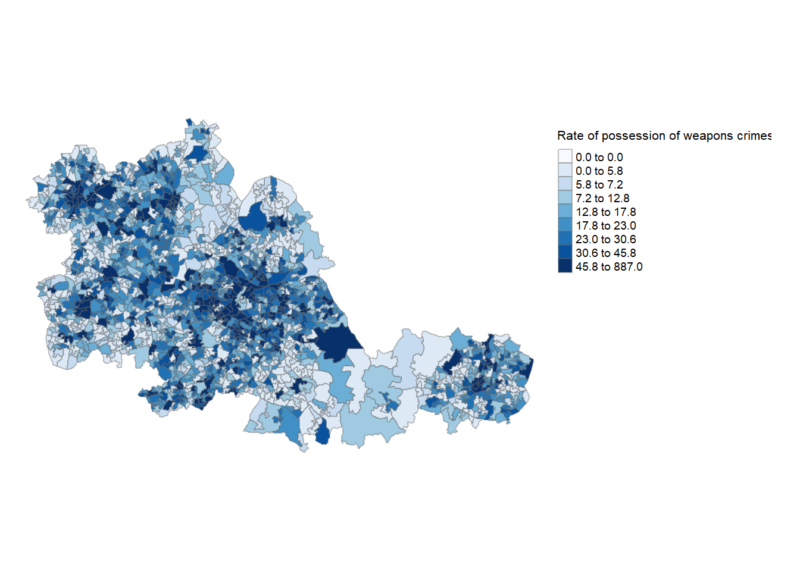
This map does effectively show how weapon crime rates are distributed, but this map can be made more presentable. Firstly the colour palette has been changed to “RdPu” which is from the RColourBrewer package, which provides a range of different pre-made colour palettes that can be used in maps. Additionally, the style has been changed to “fixed” indicating that the class breaks on this map are going to be pre-specified, as shown in the ‘breaks =’ line of the code chunk. Borders have been added around each local authority for clarity, and the ‘tm_layout’ chunk allows elements such as the legend, title and font size to be altered in the map. A compass and scale bar should be included in all maps, and credits for each data source are provided in the map using ‘tm_credits’.
#Create detailed map to show the rates of weapons crimes in the West Midlands
tm_shape(WestMidlands_WeaponPossession) +
tm_fill(col = "weapon_rate",
style = "fixed",
palette = "RdPu",
n = 9,
#Breaks are chosen fixed with these intervals after analysis of the data shown on the quick map above and viewing the data distribution
breaks = c(0, 0.1, 7.5, 15, 20, 30, 40, 60, 100, 887.0),
title = "Rate of Weapon Crimes") +
tm_borders(lwd=0.1,
col = 'Lightgrey',
alpha = 0.1) +
tm_shape(LA_WestMidlands) +
tm_borders(lwd=2,
col = 'Black',
alpha = 1) +
tm_layout(main.title = "Rate of Weapon Possession Crimes in West Midlands County - 2023",
main.title.fontface = 2,
fontfamily = "Mukta",
legend.outside = TRUE,
frame = FALSE,
legend.outside.position = "right",
legend.title.size = 1,
legend.title.fontface = 2) +
tm_compass(type = "arrow",
position = c("right", "top")) +
tm_scale_bar(breaks = c(0, 5, 10, 15, 20),
position = c("left", "bottom")) +
tm_credits('Data source: West Midlands Police, ONS, Nomis',
fontface = 'italic',
align = 'right',
size = 0.5)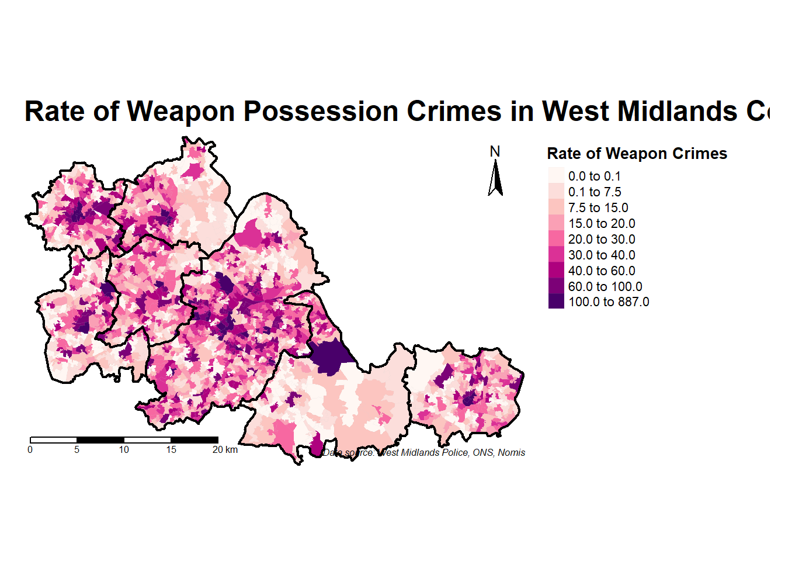
A MAJOR NOTE FOR ALL MAPS PRODUCED: Titles, axes labels, credits and scale bars may not fit on this webpage. When reproducing the code in R, increase the size of the plot window, and the these labels will all fit.
This map appears to show that areas in Central Birmingham, Central Wolverhampton and Central Coventry see the highest rates of weapon possession crimes, with most of Solihull, except the city centre, having the lowest rates. An issue of this map is that each zone is a different size, due to how census data is measured in the United Kingdom in Output Areas. This LSOA map is prone to the effects of the Multiple Aerial Unit Problem (MAUP), where trends within each LSOA can be masked due to the ‘zoning effect’. The crime point data has all been aggregated at the LSOA level, but each LSOA is differently sized, so this can create inconsistencies in the data analysis. To understand fully the issues faced by the MAUP, two useful readings are by Wong (2009), https://www.sciencedirect.com/science/article/abs/pii/B9780080449104004752 and Lee (2019) https://www.tandfonline.com/doi/full/10.1080/13658816.2018.1542699.
Using a tessalated hexagon map
To make the issue of the MAUP less severe, West Midlands County can be divided up into equally sized 500 metre hexagons, which crimes and population data can be aggregated into, to mitigate against the effects of the ‘zoning effect’.
First the outline of West Midlands County needs to be selected.
#Load in Metropolitan County gpkg data
MC_2018 <- st_read("Metropolitan_Counties_2018.gpkg")Reading layer `Metropolitan_Counties_December_2018_GCB_in_England' from data source `C:\Users\vmist\Dropbox\Vishal\Uni Work\Portfolio VM\Metropolitan_Counties_2018.gpkg'
using driver `GPKG'
Simple feature collection with 6 features and 7 fields
Geometry type: MULTIPOLYGON
Dimension: XY
Bounding box: xmin: 318351.7 ymin: 272206.9 xmax: 475119.5 ymax: 576160.1
Projected CRS: OSGB36 / British National Grid#Check crs
st_crs(MC_2018) #27700Coordinate Reference System:
User input: OSGB36 / British National Grid
wkt:
PROJCRS["OSGB36 / British National Grid",
BASEGEOGCRS["OSGB36",
DATUM["Ordnance Survey of Great Britain 1936",
ELLIPSOID["Airy 1830",6377563.396,299.3249646,
LENGTHUNIT["metre",1]]],
PRIMEM["Greenwich",0,
ANGLEUNIT["degree",0.0174532925199433]],
ID["EPSG",4277]],
CONVERSION["British National Grid",
METHOD["Transverse Mercator",
ID["EPSG",9807]],
PARAMETER["Latitude of natural origin",49,
ANGLEUNIT["degree",0.0174532925199433],
ID["EPSG",8801]],
PARAMETER["Longitude of natural origin",-2,
ANGLEUNIT["degree",0.0174532925199433],
ID["EPSG",8802]],
PARAMETER["Scale factor at natural origin",0.9996012717,
SCALEUNIT["unity",1],
ID["EPSG",8805]],
PARAMETER["False easting",400000,
LENGTHUNIT["metre",1],
ID["EPSG",8806]],
PARAMETER["False northing",-100000,
LENGTHUNIT["metre",1],
ID["EPSG",8807]]],
CS[Cartesian,2],
AXIS["(E)",east,
ORDER[1],
LENGTHUNIT["metre",1]],
AXIS["(N)",north,
ORDER[2],
LENGTHUNIT["metre",1]],
USAGE[
SCOPE["Engineering survey, topographic mapping."],
AREA["United Kingdom (UK) - offshore to boundary of UKCS within 49°45'N to 61°N and 9°W to 2°E; onshore Great Britain (England, Wales and Scotland). Isle of Man onshore."],
BBOX[49.75,-9.01,61.01,2.01]],
ID["EPSG",27700]]#Extract all West Midlands County outline data from the large main dataframe
West_Midlands_County <- MC_2018[grepl('West Midlands', MC_2018$mcty18nm), ]All weapon possession crimes then need to then be filtered out to those which occur in West Midlands County.
#Filter out weapon crimes for all of West Midlands County
all_crime_weapon_possession <- all_crime_wm |>
filter(`Crime type` == "Possession of weapons" & !is.na(Longitude) & !is.na(Latitude)) |>
#Keep longitude/latitude columns
dplyr::select(Longitude, Latitude) |>
#Transform into point spatial dataframe
st_as_sf(coords = c("Longitude", "Latitude"), crs = 4236) |>
#Transform CRS into 27700 for BNG
st_transform(27700)The hexagonal grid can be created around all of the weapon possession crimes next. ‘c(500,500)’ specifies the size of each polygon, and by specifying ‘square = FALSE’, the polygons in the grid will all be hexagon shaped.
#Make hexagonal grid
area_honeycomb_grid = st_make_grid(all_crime_weapon_possession,
c(500, 500),
what = "polygons",
square = FALSE)
#Sf and add grid ID
honeycomb_grid_sf = st_sf(area_honeycomb_grid) %>%
mutate(grid_id = 1:length(lengths(area_honeycomb_grid)))The number of weapon crimes in each hexagon can be counted, and these hexagons can be clipped to the West Midlands County boundary created 3 chunks above.
#Count number of weapon crimes in each grid
honeycomb_grid_sf$weapon_possession = lengths(st_intersects(honeycomb_grid_sf, all_crime_weapon_possession))
#Clip to West Midlands Boundary
honeycomb_grid_wm <- honeycomb_grid_sf |>
st_intersection(West_Midlands_County)Warning: attribute variables are assumed to be spatially constant throughout
all geometriesApplying raster population data to hexagon grid map
Instead of using NOMIS 2021 population census data to create the weapon possession rate per 1000 people, raster population data needs to be used. This data covers the entire United Kingdom at 1 kilometre resolution, showing population estimates for each kilometre squared grid. This data can be merged to fit into the hexagons, and then the rate can be calculated via the steps below.
Firstly, the raster population data needs to be loaded into R.
#Load raster population data for 2020 UK
pop2020 <- rast("gbr_ppp_2020_1km_Aggregated.tif")
#Transform projection to EPSG:27700
pop2020 <- pop2020 |> project("epsg:27700")
#Check how this is plotted
plot(pop2020)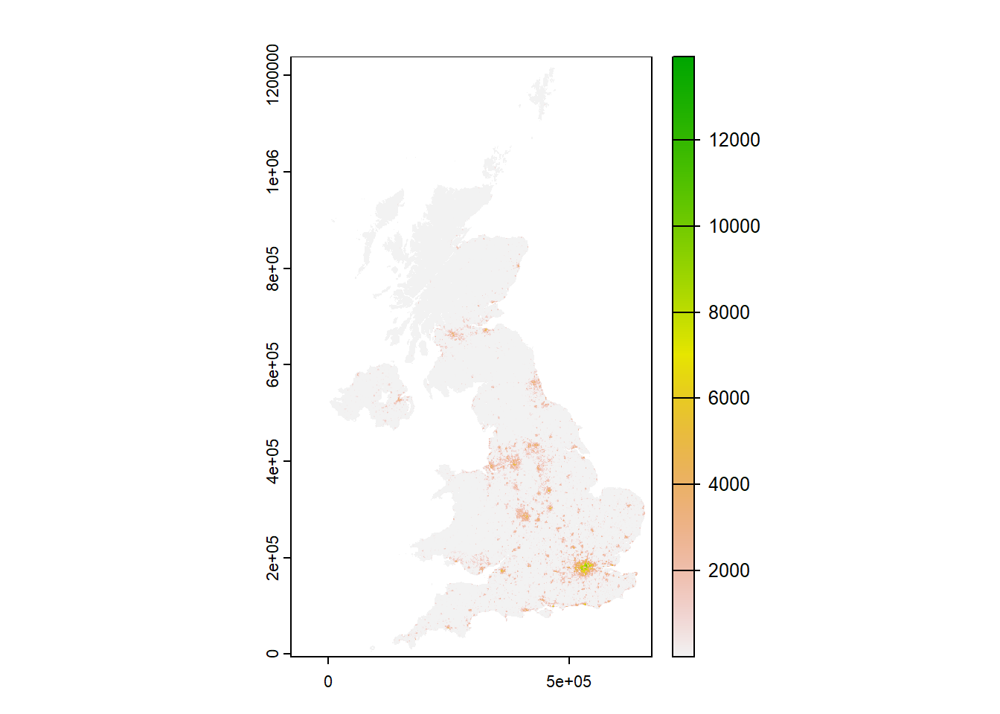
This is useful, but this data needs to be cropped to fit the specific region in this study.
#Crop and mask raster data to fit into the honeycomb area
pop2020_wm <- crop(pop2020, honeycomb_grid_wm)
pop2020_wm <- mask(pop2020_wm, honeycomb_grid_wm)
#Check how this is plotted
plot(pop2020_wm)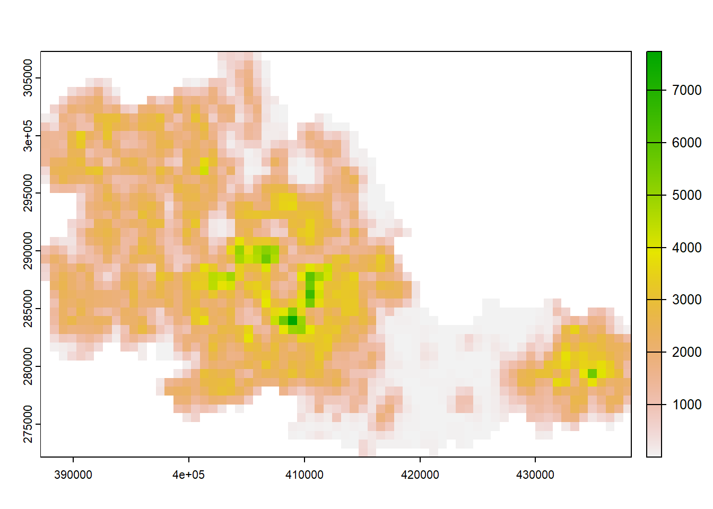
This now shows population estimates in 1km grids across West Midlands County, but this still needs to be merged to the hexagon map spatial file.
To do this, the raster data needs to be aggregated and then added to the hexagon spatial dataframe. The function to aggregate the data ‘fun’ is set to the mean.
#Aggregate
wm_hex_pop <- extract(pop2020_wm, honeycomb_grid_wm, fun = mean)
#Add to spatial dataframe
honeycomb_grid_wm <- honeycomb_grid_wm |>
st_as_sf() |>
mutate(population2020 = wm_hex_pop$gbr_ppp_2020_1km_Aggregated)The results of this can be plotted in a map to check if the tasks have been conducted correctly.
#Plot map of population in each 500m hexagon in West Midlands County
tm_shape(LA_WestMidlands) +
tm_borders(lwd=2,
col = 'black',
alpha = 1) +
tm_shape(honeycomb_grid_wm) +
tm_fill(col = "population2020",
palette = 'YlGnBu',
style = "quantile",
n=5,
title = "Population Count",
id = "grid_id",
showNA = FALSE,
alpha = 0.6,
popup.vars = c("Population Count: " = "population2020"),
popup.format = list(population2020 = list(format = "f", digits = 0))) +
tm_borders(col = "grey40",
lwd = 0.7) +
tm_layout(main.title = "Population Count in 500 metre hexagons in West Midlands County - 2020",
main.title.fontface = 2,
fontfamily = "Mukta",
legend.outside = TRUE,
frame = FALSE,
legend.position = c("left", "top"),
legend.title.size = 1,
legend.title.fontface = 2) +
tm_compass(type = "arrow",
position = c("right", "top")) +
tm_scale_bar(breaks = c(0,5,10,15,20),
position = c("left", "bottom")) +
tm_credits("Data Source: ONS, WorldPop",
position = c('right', 'bottom'),
fontface = 'italic',
size = 0.5)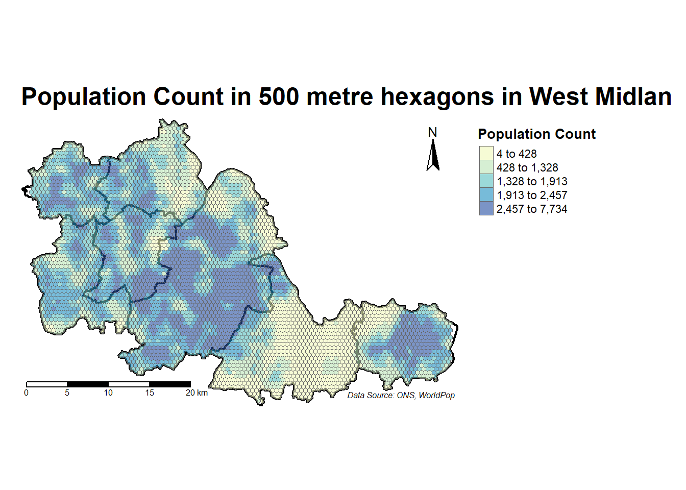
This map provides a view into how the population is distributed in the county. Birmingham and Coventry have the highest number of residents, and Solihull has the lowest, with most residents concentrated in the north. This map will be useful to refer to throughout the study to understand how population density is inherently linked with the occurrence of weapon possession crimes.
Now that each hexagon contains data for the number of weapon crimes and population, these two variable can be manipulated to create a weapon possession rate per 1000 people variable to be used throughout the study.
#Calculate weapon crime rate per 1000 people variable using the newly created population variable
honeycomb_grid_wm$weaponcrime_rate <- (honeycomb_grid_wm$weapon_possession/honeycomb_grid_wm$population2020)*1000Map of Weapon Possession Crime Rates in West Midlands County
Using the variable created in the previous step, and the presentation standards outlined in the first maps created, a final map of weapon possession crime rates in the study area can be produced and analysed. The palette has now been selected using a colour choice of my design, where areas with a crime rate of 0 are indicted in green, and areas with increasing crime rates transition from yellow to red.
#Create hex weapon crime rate per 1000 map
tm_shape(LA_WestMidlands) +
tm_borders(lwd=2,
col = 'black',
alpha = 1) +
tm_shape(honeycomb_grid_wm) +
tm_fill(col = "weaponcrime_rate",
palette = c("#009900", "#ffff00", "#ffcc00", "#ffa600", "#ff7300", "#ff4d00", "#ff2600", "#ff0000"),
style = "fixed",
n=8,
breaks = c(0,0.1,0.5,0.9,1.5,4.0,10,36,631),
title = "Weapon Possession Crime Rate per 1000 people",
id = "grid_id",
showNA = FALSE,
alpha = 0.6,
popup.vars = c("Weapon Possession Crime Rate per 1000 people: " = "weaponcrime_rate"),
popup.format = list(weaponcrime_rate = list(format = "f", digits = 0))) +
tm_borders(col = "grey40",
lwd = 0.7) +
tm_layout(main.title = "Weapon Possession Crime Rate in West Midlands County - 2023",
main.title.fontface = 2,
fontfamily = "Mukta",
legend.outside = TRUE,
frame = FALSE,
legend.position = c("left", "top"),
legend.title.size = 1,
legend.title.fontface = 2) +
tm_compass(type = "arrow",
position = c("right", "top")) +
tm_scale_bar(breaks = c(0,5,10,15,20),
position = c("left", "bottom")) +
tm_credits("Data Source: ONS, West Midlands Police, WorldPop",
position = c('right', 'bottom'),
fontface = 'italic',
size = 0.5)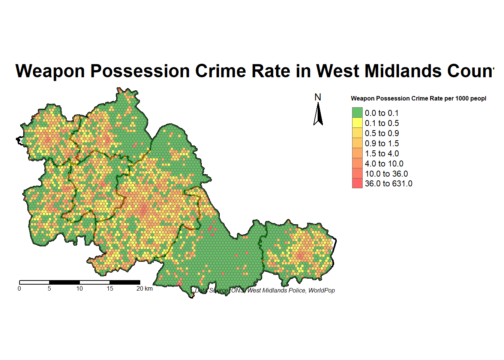
All 7 local authorities’ city centres have the highest weapon crime rates, but there are substantial variations in the rates occurring across the county.
The authority of Solihull has very rates of weapon crimes, except the city centre which has many hexagons coloured in amber, and some other hexagons located just south in the deep red colour. Birmingham has the greatest number hexagons with weapon crimes occurring, with over half of its area having a minimum of 0.1 weapon crimes occurring per 1000 people. These higher crime rates are mostly concentrated around Birmingham city centre. This pattern is similar for the other authorities, most evident in Coventry and Wolverhampton.
Spatial Autocorrelation
While the hexagon map produced above is useful for identifying weapon possession crime trends, further geospatial queries and techniques can be conducted on the dataset. One useful technique is spatial autocorrelation, which measures the degree to which similar values (of crime) occur near eachother in a study region, in a positive or negative manner. This concept links to Tobler’s Fist Law of Geography which is “Everything is related to everything else, but near things are more related than distant things”, a foundational concept in GIS.
In order to conduct spatial autocorrelation, the neighbour radius of each hexagon needs to be defined, to conduct a spatial weights matrix, which helps to quantify the influence of a particular hexagon on surrounding hexagons. This is used to calculate Global and Local measures of Spatial Autocorrelation.
In this particular study, a fixed distance neighbour definition is used, which defines a hexagon’s neighbours as spatial units which lie within a fixed distance (in this case 1500 metre radius) of the particular hexagon.
#Calculate fixed distance neighbours
hex_neighbours_fd <- dnearneigh(st_geometry(st_centroid(honeycomb_grid_wm)),
0, 1500)Warning: st_centroid assumes attributes are constant over geometries#Calculate centroids of all hex grids in West Midlands county
hex_centroid <- honeycomb_grid_wm |>
st_centroid()Warning: st_centroid assumes attributes are constant over geometries#Plot fixed distance neighbours
plot(hex_neighbours_fd, st_geometry(hex_centroid), col = "blue", pch = 20, cex = 0.5)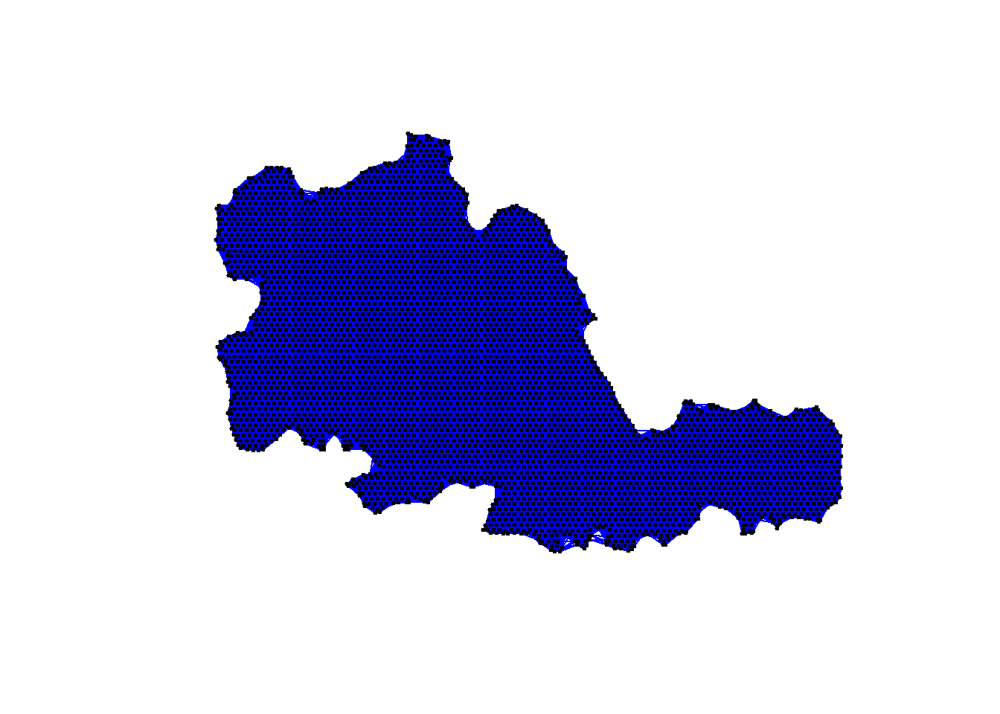
#Create neighbours list
hex_spatial_weights_fd <- hex_neighbours_fd |>
nb2listw(style = "W")Centroids of each hexagon are used in the neighbour determination, as this provides a uniform method of defining where the 1500 metre radius should be drawn from each hexagon.
Global spatial autocorrelation measures identify the degree of clustering or dispersion of the data in the entire study area. The most commonly used global method is Moran’s I, which quantifies the degree of autocorrelation, providing correlation coefficients between an area and its neighbours. A score is provided between 1 and -1, with 1 indicating perfect clustering, and -1 indicating perfect dispersion across the region.
#Create a Moran's plot
moran.plot(honeycomb_grid_wm$weaponcrime_rate, listw = hex_spatial_weights_fd)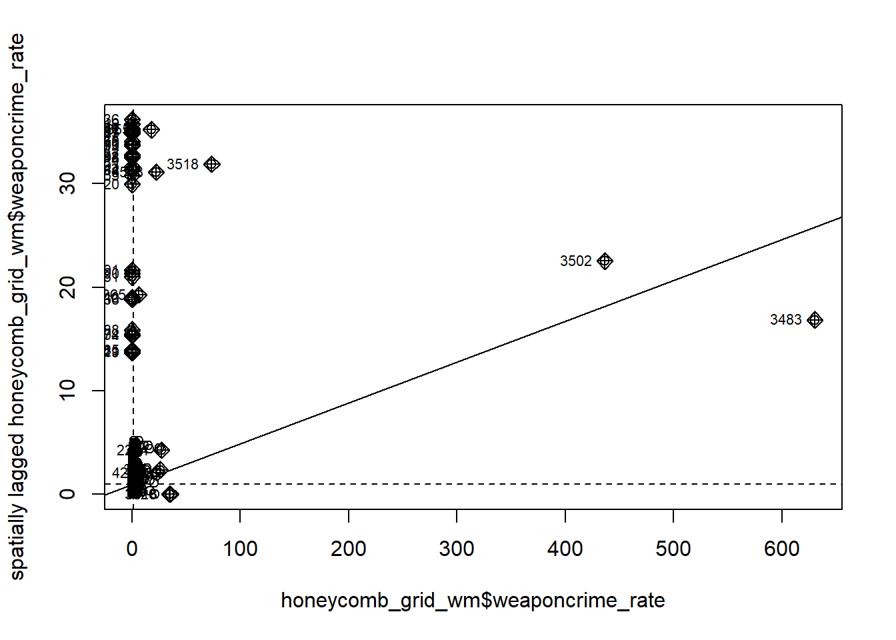
#Conduct Moran's I
moran_fd <- honeycomb_grid_wm |>
pull(weaponcrime_rate) |>
as.vector() |>
moran.test(hex_spatial_weights_fd)
#Inspect result
moran_fd
Moran I test under randomisation
data: as.vector(pull(honeycomb_grid_wm, weaponcrime_rate))
weights: hex_spatial_weights_fd
Moran I statistic standard deviate = 15.123, p-value < 2.2e-16
alternative hypothesis: greater
sample estimates:
Moran I statistic Expectation Variance
3.944465e-02 -2.251745e-04 6.880482e-06 #=3.944465e-02The overall value of Moran’s I is 3.944465e-02, indicating there is little to no spatial autocorrelation among weapon possession crime rates in the study area. This indicates that areas with neither high crime rates or low crime rates are clustered among similar areas.
Local spatial autocorrelation measures can also be conducted across the study area, which provide a Moran’s I value for each individual hexagon, and can be useful to identify local clusters and outliers.
#Conduct Local Moran's I
local_moran_fd <- honeycomb_grid_wm |>
pull(weaponcrime_rate) |>
as.vector() |>
localmoran(hex_spatial_weights_fd)
#Inspect result
head(local_moran_fd) Ii E.Ii Var.Ii Z.Ii Pr(z != E(Ii))
1 0.005365600 -1.622965e-06 0.0004225424 0.2611046 0.7940119
2 0.005542948 -1.622965e-06 0.0004790979 0.2533120 0.8000271
3 0.002867228 -1.622965e-06 0.0004490528 0.1353815 0.8923103
4 0.004524124 -1.622965e-06 0.0004225424 0.2201685 0.8257400
5 0.002928387 -1.622965e-06 0.0003989776 0.1466881 0.8833782
6 -0.005078336 -1.779934e-06 0.0004375655 -0.2426876 0.8082474The variable names can be renamed for clarity and these values can be binded to the hexagon grid data frame.
#Update heading names
local_moran_fd <- as.data.frame(local_moran_fd)
names(local_moran_fd) <- c("LMI_Ii", "LMI_eIi", "LMI_varIi", "LMI_zIi", "LMI_sigP")
#Join the data frames together
honeycomb_grid_wm <- honeycomb_grid_wm |>
mutate(local_moran_fd)The local values can now be mapped across the study area as shown below.
#Map Local Moran's I
tm_shape(honeycomb_grid_wm) +
tm_polygons(col = "LMI_Ii",
style = "pretty",
midpoint = 0,
title = "Local Moran's I statistic") +
tm_layout(main.title = "Local Moran's I statistic",
main.title.fontface = 2,
fontfamily = "Mukta",
legend.outside = TRUE,
frame = FALSE,
legend.outside.position = "right",
legend.title.size = 1,
legend.title.fontface = 2) +
tm_compass(type = "arrow",
position = c("right", "bottom")) +
tm_scale_bar(breaks = c(0, 5, 10, 15, 20),
position = c("left", "bottom"))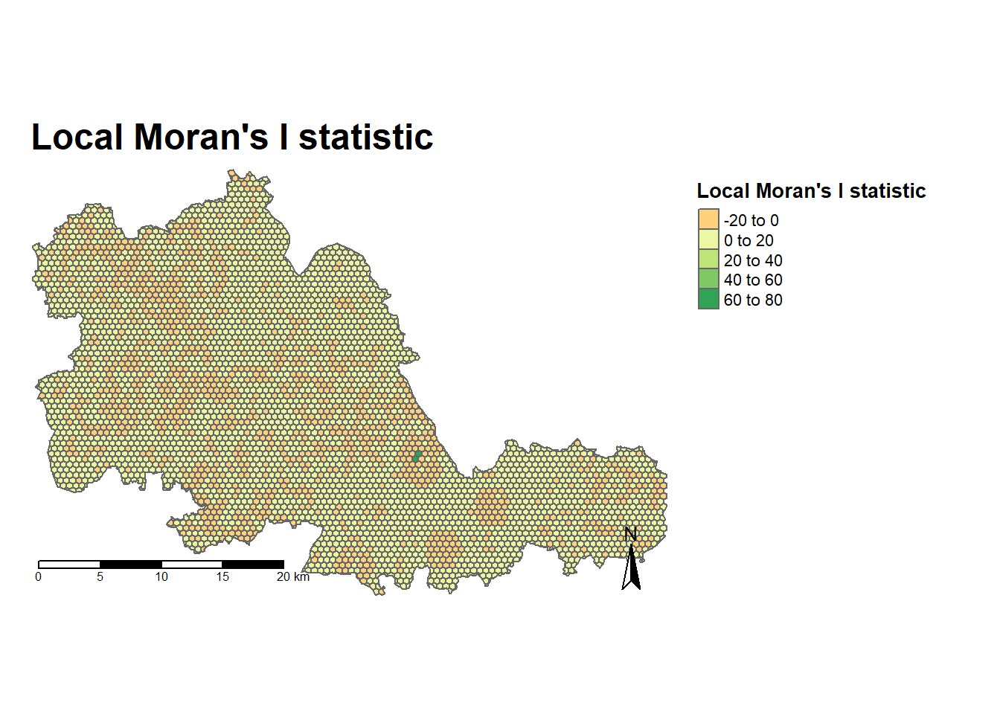
This is not a very presentable nor easy to interpret map, so it can be refined. Significance breaks can be set to identify which areas have the most significant Moran’s I values. Additionally, a colour palette can be set to identify these significant hexagons on the map as shown below.
#Set significance breaks
breaks <- c(0, 0.05, 0.1, 1)
#Set colour palette
colours <- c("#ffffff", "#ff9480", "#ff2800")
#Map Local Moran's I with the significant points coloured
tm_shape(honeycomb_grid_wm) +
tm_polygons(col = "LMI_sigP",
style = "fixed",
breaks = breaks,
palette = rev(colours),
title = "p-value of Local Moran's I statistic") +
tm_layout(main.title = "Local Moran's I Significant clusters",
main.title.fontface = 2,
fontfamily = "Mukta",
legend.outside = TRUE,
frame = FALSE,
legend.outside.position = "right",
legend.title.size = 1,
legend.title.fontface = 2) +
tm_compass(type = "arrow",
position = c("right", "bottom")) +
tm_scale_bar(breaks = c(0, 5, 10, 15, 20),
position = c("left", "bottom"))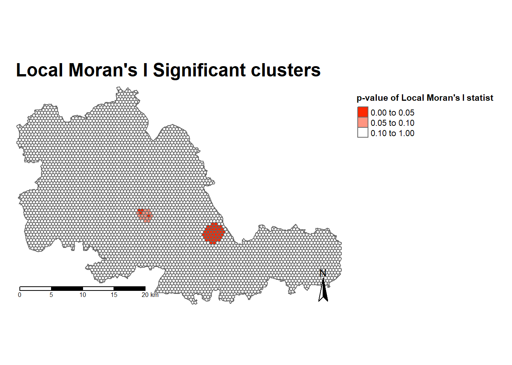
This map confirms the result from the Global test, where there does not appear to be much spatial autocorrelation in the data, but this map identifies that Central Birmingham and North Solihull have significant clusters of crime data. This map can be further refined as outlined below.
Using both Moran’s I values and statistical significance for each hexagon, a Local Indicators of Spatial Autocorrelation (LISA) map can be created, as outlined by Anselin (1995) here https://onlinelibrary.wiley.com/doi/abs/10.1111/j.1538-4632.1995.tb00338.x. The map creates 4 quadrants, which identify different types of spatial autocorrelation. Low-low identifies areas with low values surrounded by low values of crime and high-high identifies areas with high values surrounded by high values of crime. High-low identifies areas with a high value surrounded by areas with low values, and Low-high identifies areas with a low value surrounded by areas with high values, essentially identifying hexagons which are outliers.
To create this map, significance breaks and a significance level need to be set. In this study, the significance level is set to 0.1.
#Set Significance breaks
honeycomb_grid_wm <- honeycomb_grid_wm |>
mutate(obs_diff = (weaponcrime_rate - mean(honeycomb_grid_wm$weaponcrime_rate)))
#Compare local Local Moran's I value with mean value
honeycomb_grid_wm <- honeycomb_grid_wm |>
mutate(LMI_diff = (honeycomb_grid_wm$LMI_Ii - mean(honeycomb_grid_wm$LMI_Ii)))
#Set significance threshold
signif <- 0.1The four different types of clusters can then be identified, and colour palette can be selected for the map which will be produced.
#Set the four types of clusters that can be present
honeycomb_grid_wm <- honeycomb_grid_wm |>
mutate(cluster_type = case_when(
obs_diff > 0 & LMI_diff > 0 & LMI_sigP < signif ~ "High-High",
obs_diff < 0 & LMI_diff < 0 & LMI_sigP < signif ~ "Low-Low",
obs_diff < 0 & LMI_diff > 0 & LMI_sigP < signif ~ "Low-High",
obs_diff > 0 & LMI_diff < 0 & LMI_sigP < signif ~ "High-Low",
LMI_sigP > signif ~ "No Significance"))
#Count cluster types
count(honeycomb_grid_wm, cluster_type)Simple feature collection with 4 features and 2 fields
Geometry type: GEOMETRY
Dimension: XY
Bounding box: xmin: 386901.5 ymin: 272505.1 xmax: 438651.5 ymax: 307223.1
Projected CRS: OSGB36 / British National Grid
cluster_type n area_honeycomb_grid
1 High-High 20 MULTIPOLYGON (((406901.5 28...
2 High-Low 6 MULTIPOLYGON (((407401.5 28...
3 Low-Low 34 POLYGON ((416901.5 282897.4...
4 No Significance 4382 POLYGON ((388419.3 282643.3...#Create colour palette
pal <- c("#ff2800", "#ff9480", "#133a7c", "#ffffff")The LISA map can now be produced, as shown in this code chunk.
#Plot the different clusters as a LISA map
tm_shape(honeycomb_grid_wm) +
tm_polygons(col = "cluster_type",
palette = pal,
title = "Cluster Type") +
tm_borders(lwd=0.1,
col = 'Lightgrey',
alpha = 0.1) +
tm_shape(LA_WestMidlands) +
tm_borders(lwd=2,
col = 'Black',
alpha = 1) +
tm_layout(main.title = "LISA map of weapon crime rate in West Midlands County",
main.title.fontface = 2,
fontfamily = "Mukta",
legend.outside = TRUE,
frame = FALSE,
legend.outside.position = "right",
legend.title.size = 1,
legend.title.fontface = 2) +
tm_compass(type = "arrow",
position = c("right", "top")) +
tm_scale_bar(breaks = c(0, 5, 10, 15, 20),
position = c("left", "bottom")) +
tm_credits('Data source: West Midlands Police, ONS, WorldPop',
fontface = 'italic',
align = 'right',
size = 0.5)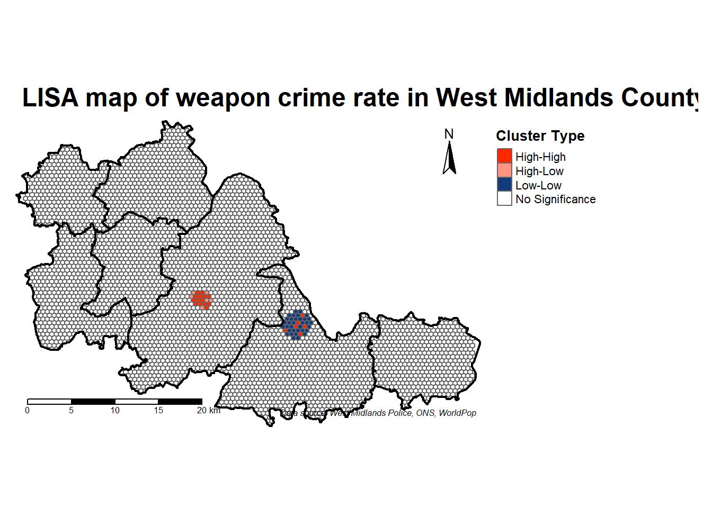
This map shows that there is a high-high cluster of weapon crime rates in Central Birmingham, with some high-low clusters towards the edge of the centre. Additionally, North Solihull is mostly a low-low cluster of weapon crime rates, but there are particular hexagons in the area which identify high weapon crime rates.
A different measure of spatial autocorrelation can also be conducted. The Getis Ord Gi* statistic can be calculated for each hexagon and a hot/cold spot map can be produced across the study area. This method was proposed by Getis and Ord (1992) here https://onlinelibrary.wiley.com/doi/10.1111/j.1538-4632.1992.tb00261.x. The method compares local values to the global sum, considering spatial relationships between neighbours; and the method incorporates the spatial weights matrix and computes z-scores to determine significance. Using z-scores, adjusting for significance, hotspots and cold spots can be determined where higher z-scores indicate hotspots and lower z-scores indicate cold spots.
Using the defined fixed distance neighbours, the Gi* test can be conducted, and this data can be joined to the hexagon data frame.
#Gi* test
gi_fd <- honeycomb_grid_wm |>
pull(weaponcrime_rate) |>
as.vector() |>
localG(hex_spatial_weights_fd)
#Join data together
honeycomb_grid_wm <- honeycomb_grid_wm |>
mutate(weaponcrime_gi = as.numeric(gi_fd))
#Inspect dataset
honeycomb_grid_wmSimple feature collection with 4442 features and 20 fields
Geometry type: GEOMETRY
Dimension: XY
Bounding box: xmin: 386901.5 ymin: 272505.1 xmax: 438651.5 ymax: 307223.1
Projected CRS: OSGB36 / British National Grid
First 10 features:
grid_id weapon_possession mcty18cd mcty18nm bng_e bng_n long
19 19 0 E11000005 West Midlands 402507 289715 -1.96448
20 20 0 E11000005 West Midlands 402507 289715 -1.96448
29 29 0 E11000005 West Midlands 402507 289715 -1.96448
30 30 0 E11000005 West Midlands 402507 289715 -1.96448
31 31 0 E11000005 West Midlands 402507 289715 -1.96448
32 32 3 E11000005 West Midlands 402507 289715 -1.96448
33 33 0 E11000005 West Midlands 402507 289715 -1.96448
59 59 0 E11000005 West Midlands 402507 289715 -1.96448
60 60 0 E11000005 West Midlands 402507 289715 -1.96448
61 61 0 E11000005 West Midlands 402507 289715 -1.96448
lat GlobalID
19 52.50534 {B9BFCE10-F6A8-4506-B279-E46B2DD9C1BB}
20 52.50534 {B9BFCE10-F6A8-4506-B279-E46B2DD9C1BB}
29 52.50534 {B9BFCE10-F6A8-4506-B279-E46B2DD9C1BB}
30 52.50534 {B9BFCE10-F6A8-4506-B279-E46B2DD9C1BB}
31 52.50534 {B9BFCE10-F6A8-4506-B279-E46B2DD9C1BB}
32 52.50534 {B9BFCE10-F6A8-4506-B279-E46B2DD9C1BB}
33 52.50534 {B9BFCE10-F6A8-4506-B279-E46B2DD9C1BB}
59 52.50534 {B9BFCE10-F6A8-4506-B279-E46B2DD9C1BB}
60 52.50534 {B9BFCE10-F6A8-4506-B279-E46B2DD9C1BB}
61 52.50534 {B9BFCE10-F6A8-4506-B279-E46B2DD9C1BB}
area_honeycomb_grid population2020 weaponcrime_rate LMI_Ii
19 POLYGON ((387401.5 288670.9... 571.1822 0.000000 0.005365600
20 MULTIPOLYGON (((387401.5 28... 1161.1639 0.000000 0.005542948
29 MULTIPOLYGON (((387151.5 29... 1415.0453 0.000000 0.002867228
30 POLYGON ((386901.5 298197.1... 1411.6709 0.000000 0.004524124
31 POLYGON ((387014.3 298998.1... 1476.7990 0.000000 0.002928387
32 POLYGON ((387401.5 300217.9... 1479.6732 2.027475 -0.005078336
33 POLYGON ((386973 300753.9, ... 862.3975 0.000000 0.003950010
59 POLYGON ((387401.5 288670.9... 571.1822 0.000000 0.005559493
60 POLYGON ((387401.5 289536.9... 1402.2463 0.000000 0.004430653
61 POLYGON ((387350.1 289855.3... 920.0815 0.000000 0.005165597
LMI_eIi LMI_varIi LMI_zIi LMI_sigP obs_diff LMI_diff
19 -1.622965e-06 0.0004225424 0.2611046 0.7940119 -0.9903441 -0.03407905
20 -1.622965e-06 0.0004790979 0.2533120 0.8000271 -0.9903441 -0.03390170
29 -1.622965e-06 0.0004490528 0.1353815 0.8923103 -0.9903441 -0.03657743
30 -1.622965e-06 0.0004225424 0.2201685 0.8257400 -0.9903441 -0.03492053
31 -1.622965e-06 0.0003989776 0.1466881 0.8833782 -0.9903441 -0.03651627
32 -1.779934e-06 0.0004375655 -0.2426876 0.8082474 1.0371306 -0.04452299
33 -1.622965e-06 0.0005530550 0.1680322 0.8665580 -0.9903441 -0.03549464
59 -1.622965e-06 0.0003778933 0.2860733 0.7748220 -0.9903441 -0.03388516
60 -1.622965e-06 0.0003778933 0.2280038 0.8196433 -0.9903441 -0.03501400
61 -1.622965e-06 0.0004490528 0.2438419 0.8073533 -0.9903441 -0.03427906
cluster_type weaponcrime_gi
19 No Significance -0.2611046
20 No Significance -0.2533120
29 No Significance -0.1353815
30 No Significance -0.2201685
31 No Significance -0.1466881
32 No Significance -0.2426876
33 No Significance -0.1680322
59 No Significance -0.2860733
60 No Significance -0.2280038
61 No Significance -0.2438419Using the data above, and selecting an appropriate colour palette, the hot/cold spot map can be created as shown below.
#Set colour palette
pal2 <- c("#81c4ff", "#ff9480", "#ff3e1a", "#ff2800", "#b31c00")
#Plot the different clusters
tm_shape(honeycomb_grid_wm) +
tm_polygons(col = "weaponcrime_gi",
style = "pretty",
midpoint = 0,
title = "Local Gi* statistic",
palette = pal2) +
tm_borders(lwd=0.1,
col = 'Lightgrey',
alpha = 0.1) +
tm_shape(LA_WestMidlands) +
tm_borders(lwd=2,
col = 'Black',
alpha = 1) +
tm_layout(main.title = "Hot/Coldspot map of weapon crime rates in West Midlands County",
main.title.fontface = 2,
fontfamily = "Mukta",
legend.outside = TRUE,
frame = FALSE,
legend.outside.position = "right",
legend.title.size = 1,
legend.title.fontface = 2) +
tm_compass(type = "arrow",
position = c("right", "top")) +
tm_scale_bar(breaks = c(0, 5, 10, 15, 20),
position = c("left", "bottom")) +
tm_credits('Data source: West Midlands Police, ONS, WorldPop',
fontface = 'italic',
align = 'right',
size = 0.5)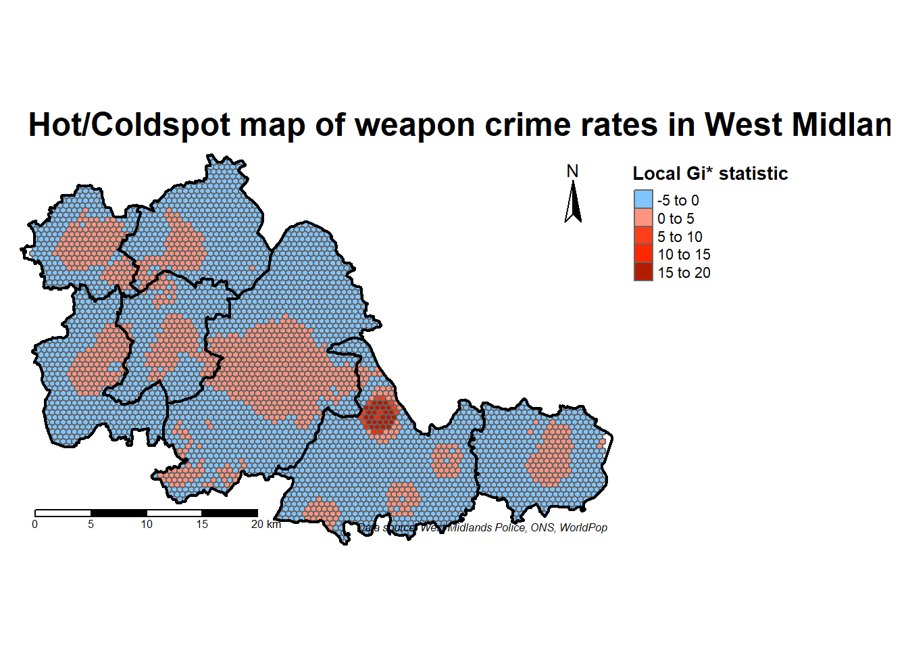
This map suggests that the highest weapon crime rates are found in North Solihull, and to a lesser degree in the central areas of all other local authorities. Most areas outside the city centres have dispersed weapon crime rates.
Geographically Weighted Regression
To test the relationship between weapon crime rates and another variable of interest, a geographically weighted regression (GWR) can be performed. This is better than a linear regression model, as GWR accounts for spatial weights within each spatial unit. The comparison variable of interest for this study is the Index of Multiple Deprivation (IMD), as this consists of many variables in its creation, including income and health statistics, and there could potentially be a link between high levels of deprivation and high crime rates.
#Create detailed map to show IMD in the West Midlands
tm_shape(WestMidlands_WeaponPossession) +
tm_fill(col = "SOA_decile",
style = "fixed",
palette = "RdYlBu",
n = 10,
#Breaks are chosen fixed with these intervals as IMD goes in this scale
breaks = c(0, 1, 2, 3, 4, 5, 6, 7, 8, 9, 10),
title = "IMD Decile Scores",
labels = c('Worst Performing', '9th', '8th', '7th', '6th', '5th', '4th', '3rd', '2nd', 'Best Performing')) +
tm_borders(lwd=0.1,
col = 'Lightgrey',
alpha = 0.1) +
tm_shape(LA_WestMidlands) +
tm_borders(lwd=2,
col = 'Black',
alpha = 1) +
tm_layout(main.title = "IMD decile scores for West Midlands County - 2019",
main.title.fontface = 2,
fontfamily = "Mukta",
legend.outside = TRUE,
frame = FALSE,
legend.outside.position = "right",
legend.title.size = 1,
legend.title.fontface = 2) +
tm_compass(type = "arrow",
position = c("right", "top")) +
tm_scale_bar(breaks = c(0, 5, 10, 15, 20),
position = c("left", "bottom")) +
tm_credits('Data source: ONS, CRDC',
fontface = 'italic',
align = 'right',
size = 0.5)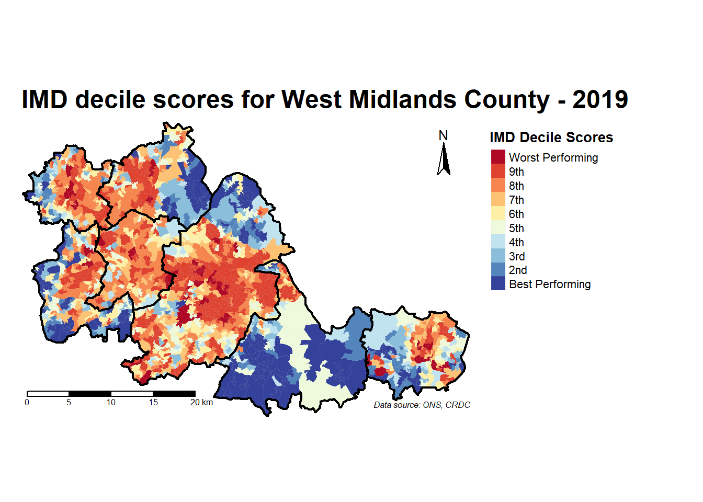
The map shows that the centres of Birmingham, Sandwell and Coventry have high deprivation scores, and most of Solihull and the edges of most authorities have low deprivation scores.
A MAJOR NOTE FOR GWR: Since the IMD is calculated by LSOA, this cannot be aggregated to the hexagons formed in previous maps. Fortunately at the start of this report, weapon crime rates per 1000 people were calculated by LSOA, using 2021 population data from the census, so this will be used for this section.
Before conducting the GWR, a standard regression model is created to see what the inital correlation between weapon possession crime rates and the IMD.
linearmodel <- lm(WestMidlands_WeaponPossession$weapon_rate ~ WestMidlands_WeaponPossession$SOA_pct)
summary(linearmodel)
Call:
lm(formula = WestMidlands_WeaponPossession$weapon_rate ~ WestMidlands_WeaponPossession$SOA_pct)
Residuals:
Min 1Q Median 3Q Max
-32.64 -13.60 -4.67 4.77 864.05
Coefficients:
Estimate Std. Error t value Pr(>|t|)
(Intercept) 32.6386 1.2192 26.77 <2e-16 ***
WestMidlands_WeaponPossession$SOA_pct -0.3335 0.0287 -11.62 <2e-16 ***
---
Signif. codes: 0 '***' 0.001 '**' 0.01 '*' 0.05 '.' 0.1 ' ' 1
Residual standard error: 33.4 on 1717 degrees of freedom
Multiple R-squared: 0.07289, Adjusted R-squared: 0.07235
F-statistic: 135 on 1 and 1717 DF, p-value: < 2.2e-16#Multiple R-squared = 0.07289While p-values are significant for this model, the relatively low multiple R-squared value of 0.07289 indicates that 7.29% of variance is explained by model. This model can be much improved through GWR.
To work with the ‘spgwr’ package, the spatial object needs to be reformatted.
#The WestMidlands_WeaponPossession object reformatted to a different type of spatial object
WestMidlands_WeaponPossession.SP<- as(WestMidlands_WeaponPossession, "Spatial")The GWR calculates local coefficients for each LSOA, using adaptive kernel bandwidths to provide stronger results by accounting for the varying data density in each LSOA.
#Calculate kernel bandwidth, adaptive
GWRbandwidth <- gwr.sel(WestMidlands_WeaponPossession.SP$weapon_rate ~
WestMidlands_WeaponPossession.SP$SOA_pct,
data=WestMidlands_WeaponPossession.SP,
adapt=T)Adaptive q: 0.381966 CV score: 1914148
Adaptive q: 0.618034 CV score: 1916280
Adaptive q: 0.236068 CV score: 1912300
Adaptive q: 0.145898 CV score: 1909062
Adaptive q: 0.09016994 CV score: 1898780
Adaptive q: 0.05572809 CV score: 1878710
Adaptive q: 0.03444185 CV score: 1850443
Adaptive q: 0.02128624 CV score: 1821956
Adaptive q: 0.01315562 CV score: 1801766
Adaptive q: 0.008130619 CV score: 1786028
Adaptive q: 0.005024999 CV score: 1770742
Adaptive q: 0.00310562 CV score: 1748312
Adaptive q: 0.001919379 CV score: 1753795
Adaptive q: 0.002952573 CV score: 1746818
Adaptive q: 0.002678447 CV score: 1745033
Adaptive q: 0.002388508 CV score: 1743831
Adaptive q: 0.002038421 CV score: 1749587
Adaptive q: 0.002254787 CV score: 1744347
Adaptive q: 0.002429199 CV score: 1743949
Adaptive q: 0.002347818 CV score: 1743734
Adaptive q: 0.002307128 CV score: 1743823
Adaptive q: 0.002347818 CV score: 1743734 After performing this, the GWR model can be created and the results can be viewed.
#Run GWR model and view the results after
gwr.model = gwr(WestMidlands_WeaponPossession.SP$weapon_rate ~
WestMidlands_WeaponPossession.SP$SOA_pct,
data = WestMidlands_WeaponPossession.SP,
adapt=GWRbandwidth,
hatmatrix=TRUE,
se.fit=TRUE)
gwr.modelCall:
gwr(formula = WestMidlands_WeaponPossession.SP$weapon_rate ~
WestMidlands_WeaponPossession.SP$SOA_pct, data = WestMidlands_WeaponPossession.SP,
adapt = GWRbandwidth, hatmatrix = TRUE, se.fit = TRUE)
Kernel function: gwr.Gauss
Adaptive quantile: 0.002347818 (about 4 of 1719 data points)
Summary of GWR coefficient estimates at data points:
Min. 1st Qu. Median
X.Intercept. 4.30059 22.39361 27.49778
WestMidlands_WeaponPossession.SP.SOA_pct -3.77940 -0.45674 -0.27150
3rd Qu. Max. Global
X.Intercept. 36.03627 150.47974 32.6386
WestMidlands_WeaponPossession.SP.SOA_pct -0.14813 5.31077 -0.3335
Number of data points: 1719
Effective number of parameters (residual: 2traceS - traceS'S): 457.122
Effective degrees of freedom (residual: 2traceS - traceS'S): 1261.878
Sigma (residual: 2traceS - traceS'S): 32.2659
Effective number of parameters (model: traceS): 322.8728
Effective degrees of freedom (model: traceS): 1396.127
Sigma (model: traceS): 30.67539
Sigma (ML): 27.64487
AICc (GWR p. 61, eq 2.33; p. 96, eq. 4.21): 17089.24
AIC (GWR p. 96, eq. 4.22): 16613.42
Residual sum of squares: 1313727
Quasi-global R2: 0.3642764 #Quasi-global R-squared = 0.364We can see here that the model performs much better than the linear model as the Quasi-global R2 is 0.3642764, much higher than the linear regression model’s score of 0.07289. This indicates that 36.43% of variance is explained by model, which is still not high, but still shows that the GWR is an appropriate method.
In order to map these results, local coefficients and local R2 values need to be linked to the spatial data frame as shown below.
#Use local R2 values from this model now and local coefficients
results <-as.data.frame(gwr.model$SDF)
names(results) [1] "sum.w"
[2] "X.Intercept."
[3] "WestMidlands_WeaponPossession.SP.SOA_pct"
[4] "X.Intercept._se"
[5] "WestMidlands_WeaponPossession.SP.SOA_pct_se"
[6] "gwr.e"
[7] "pred"
[8] "pred.se"
[9] "localR2"
[10] "X.Intercept._se_EDF"
[11] "WestMidlands_WeaponPossession.SP.SOA_pct_se_EDF"
[12] "pred.se.1" gwr.map <- WestMidlands_WeaponPossession
gwr.map <- cbind(WestMidlands_WeaponPossession, as.matrix(results))The local coefficients for the model can be mapped across West Midlands County, with an appropriate colour palette, and map elements as shown below. Initally a quick qtm map was made for this to see how the breaks are distributed. With this in mind I have selected appropriate class breaks as specified in breaksgwr. The variable “WestMidlands_WeaponPossession.SP.SOA_pct” represents the local GWR coefficients for each LSOA
#Create GWR coefficient map for IMD Rank
#Set palette first
pal3 <- c('#ff8000', '#ff9d3b', '#ffce9d', '#7cffc1' ,'#31a354', '#006837')
breaksgwr <- c(-3.779, -1.000, -0.500, 0, 0.5000, 1.000, 5.311)
tm_shape(gwr.map) +
tm_fill("WestMidlands_WeaponPossession.SP.SOA_pct",
n = 6,
breaks = breaksgwr,
title = "IMD Rank Coefficient",
palette = pal3) +
tm_borders(lwd=0.2,
col = 'darkgrey',
alpha = 0.1) +
tm_shape(LA_WestMidlands) +
tm_borders(lwd=2,
col = 'Black',
alpha = 1) +
tm_layout(main.title = "GWR Analysis: IMD vs Weapon Crime Rate in West Midlands County",
main.title.fontface = 2,
fontfamily = "Mukta",
legend.outside = TRUE,
frame = FALSE,
legend.outside.position = "right",
legend.title.size = 1,
legend.title.fontface = 2) +
tm_compass(type = "arrow",
position = c("right", "top")) +
tm_scale_bar(breaks = c(0, 5, 10, 15, 20),
position = c("left", "bottom")) +
tm_credits('Data source: West Midlands Police, ONS, Nomis, CRDC',
fontface = 'italic',
align = 'right',
size = 0.5)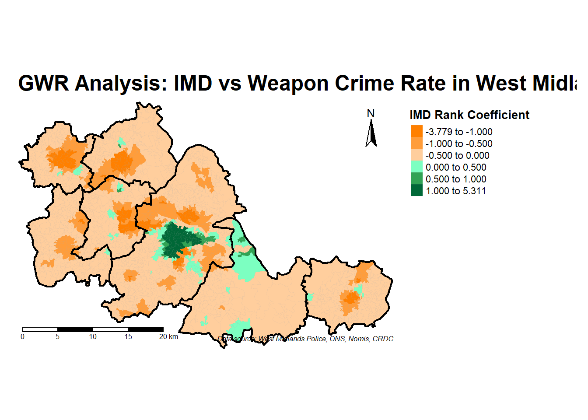
The map displays the local coefficients for each LSOA. Orange coloured areas, such as most of Wolverhampton, central Coventry and Walsall have a negative correlation between the IMD and the weapon crime rate. Areas in the green colour, such as central Birmingham and north and south Solihull show a positive correlation between weapon crime rate and IMD scores. This result was expected as other studies have found a link between deprivation and knife crime.
Focus on Birmingham
Due to the GWR results suggesting that there is a positive correlation between deprivation and the weapon possession rate, and that Birmingham is the largest city/local authority in the county, the area has been selected for further analysis of weapon crimes.
Another factor as suggested by academics which links to crime is unemployment, so the first part of the Birmingham analysis will may unemployment across each Ward in the authority, and provide locations of where weapon possession crimes took place.
It is important in this report to know the names of the wards being discussed across Birmingham as shown in this map. (Source: https://www.birmingham.gov.uk/wards).

More data preparation steps are required to conduct this as the scale of the maps is changing from the entirety of West Midlands County by LSOA to Birmingham by Ward. Additionally, unemployment and other associated variables need to be loaded into R.
Firstly all the crimes in West Midlands County need to be filtered by weapon possession and transformed to the correct CRS, similar to the first set of data preparation in this report.
#Filter all crimes by Possession of Weapons
crime_weapon_possession <- all_crime_wm |>
filter(`Crime type` == "Possession of weapons" & !is.na(Longitude) & !is.na(Latitude)) |>
#Keep longitude/latitude columns
dplyr::select(Longitude, Latitude) |>
#Transform into point spatial dataframe, set CRS to 4236
st_as_sf(coords = c("Longitude", "Latitude"), crs = 4236) |>
#Transform CRS into 27700 for BNG
st_transform(27700)This set of spatial data points needs to be saved as a geopackage and loaded back into R.
#Save the crime_weapon_possession spatial frame from the chunk above using st_write as "WestMidlands_Weapons_2023.gpkg"
#Load weapon data geopackage in
weapons_wm_2023 <- st_read("WestMidlands_Weapons_2023.gpkg")Reading layer `WestMidlands_Weapons_2023' from data source
`C:\Users\vmist\Dropbox\Vishal\Uni Work\Portfolio VM\WestMidlands_Weapons_2023.gpkg'
using driver `GPKG'
Simple feature collection with 6756 features and 0 fields
Geometry type: POINT
Dimension: XY
Bounding box: xmin: 387401.5 ymin: 272793.7 xmax: 438264.2 ymax: 306828.7
Projected CRS: OSGB36 / British National GridThis map is just a test to see whether all the crime points have been created correctly. It should look like this.
#Test to see if all data has loaded correctly
#Plot West Midlands LSOAs and Possession of Weapons points
tm_shape(LSOA_WestMidlands) +
tm_fill() +
tm_shape(weapons_wm_2023) +
tm_dots(col = "blue")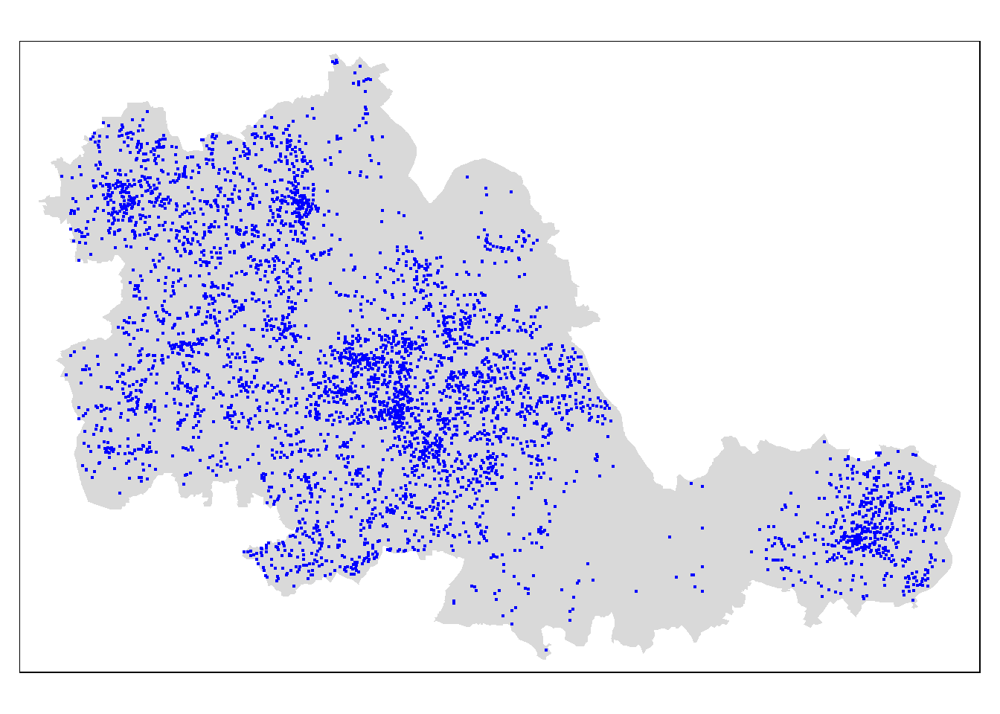
Since this section of the report only focuses on Birmingham, the spatial data frames need to be filtered to just include information on Birmingham as shown below.
#Extract out the Birmingham Local Authority
LA_Birmingham <- LA_eng_2023[grepl('Birmingham', LA_eng_2023$LAD23NM), ]
#Extract out the Birmingham LSOAs
LSOA_Birmingham <- LSOA_eng_2021[grepl('Birmingham', LSOA_eng_2021$LSOA21NM), ]
#Extract all Birmingham data from the large main dataframe
Birmingham_WeaponPossession <- WestMidlands_WeaponPossession[grepl('Birmingham', WestMidlands_WeaponPossession$LSOA21NM), ]Next the ward spatial data for Birmingham needs to be loaded into R. After inspecting the dataset, it appears that rows 2752 to 2820 contain all the wards in Birmingham, so these are extracted and the shape is checked to see if there are any errors.
#Load in Ward gpkg data
Wards_2023 <- st_read("Wards_2023.gpkg")Reading layer `WD_DEC_2023_UK_BGC' from data source
`C:\Users\vmist\Dropbox\Vishal\Uni Work\Portfolio VM\Wards_2023.gpkg'
using driver `GPKG'
Simple feature collection with 8441 features and 8 fields
Geometry type: MULTIPOLYGON
Dimension: XY
Bounding box: xmin: -116.1928 ymin: 5352.6 xmax: 655653.8 ymax: 1220299
Projected CRS: OSGB36 / British National Grid#Check crs
st_crs(Wards_2023) #27700Coordinate Reference System:
User input: OSGB36 / British National Grid
wkt:
PROJCRS["OSGB36 / British National Grid",
BASEGEOGCRS["OSGB36",
DATUM["Ordnance Survey of Great Britain 1936",
ELLIPSOID["Airy 1830",6377563.396,299.3249646,
LENGTHUNIT["metre",1]]],
PRIMEM["Greenwich",0,
ANGLEUNIT["degree",0.0174532925199433]],
ID["EPSG",4277]],
CONVERSION["British National Grid",
METHOD["Transverse Mercator",
ID["EPSG",9807]],
PARAMETER["Latitude of natural origin",49,
ANGLEUNIT["degree",0.0174532925199433],
ID["EPSG",8801]],
PARAMETER["Longitude of natural origin",-2,
ANGLEUNIT["degree",0.0174532925199433],
ID["EPSG",8802]],
PARAMETER["Scale factor at natural origin",0.9996012717,
SCALEUNIT["unity",1],
ID["EPSG",8805]],
PARAMETER["False easting",400000,
LENGTHUNIT["metre",1],
ID["EPSG",8806]],
PARAMETER["False northing",-100000,
LENGTHUNIT["metre",1],
ID["EPSG",8807]]],
CS[Cartesian,2],
AXIS["(E)",east,
ORDER[1],
LENGTHUNIT["metre",1]],
AXIS["(N)",north,
ORDER[2],
LENGTHUNIT["metre",1]],
USAGE[
SCOPE["Engineering survey, topographic mapping."],
AREA["United Kingdom (UK) - offshore to boundary of UKCS within 49°45'N to 61°N and 9°W to 2°E; onshore Great Britain (England, Wales and Scotland). Isle of Man onshore."],
BBOX[49.75,-9.01,61.01,2.01]],
ID["EPSG",27700]]#Extract out all wards in Birmingham
rows_to_extract <- 2752:2820
Wards_Birmingham <- Wards_2023[rows_to_extract, ]
#Check the wards shape is correct
tm_shape(Wards_Birmingham)+
tm_fill() +
tm_borders()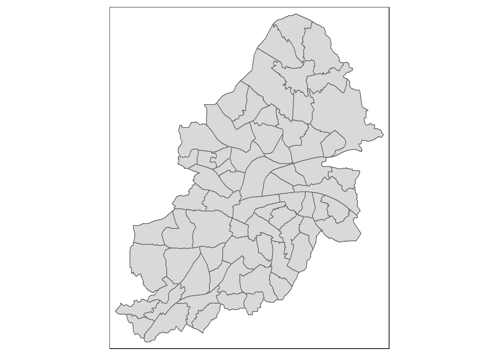
If the map produced looks like the one above, the data preparation steps have been conducted correctly.
All weapon crimes now need to be filtered to include those which took place in Birmingham. Previous steps which were conducted need to be taken place to sort the newly created all_crime_birmingham into a set of points which only contains data on weapon possession crimes.
#Extract all crimes committed in Birmingham
all_crime_birmingham <- all_crime_wm[grepl('Birmingham', all_crime_wm$`LSOA name`), ]
#Repeat lines to filter out weapon crimes
birmingham_crime_weapon_possession <- all_crime_birmingham |>
filter(`Crime type` == "Possession of weapons" & !is.na(Longitude) & !is.na(Latitude)) |>
#Keep longitude/latitude columns
dplyr::select(Longitude, Latitude) |>
#Transform into point spatial dataframe, set CRS to 4236
st_as_sf(coords = c("Longitude", "Latitude"), crs = 4236) |>
#Transform CRS into 27700 for BNG
st_transform(27700)
#Save the birmingham_crime_weapon_possession spatial frame using st_write as "Birmingham_Weapons_2023.gpkg"
#Load weapon data geopackage in
weapons_birmingham_2023 <- st_read("Birmingham_Weapons_2023.gpkg")Reading layer `Birmingham_Weapons_2023' from data source
`C:\Users\vmist\Dropbox\Vishal\Uni Work\Portfolio VM\Birmingham_Weapons_2023.gpkg'
using driver `GPKG'
Simple feature collection with 3183 features and 0 fields
Geometry type: POINT
Dimension: XY
Bounding box: xmin: 397903.3 ymin: 276469.3 xmax: 416304 ymax: 300105.6
Projected CRS: OSGB36 / British National GridAgain, it is useful to check if these tasks have been performed correctly by producing a simple map as shown below.
#Check the data works in a map
tm_shape(LSOA_Birmingham) +
tm_fill() +
tm_shape(weapons_birmingham_2023) +
tm_dots(col = "blue")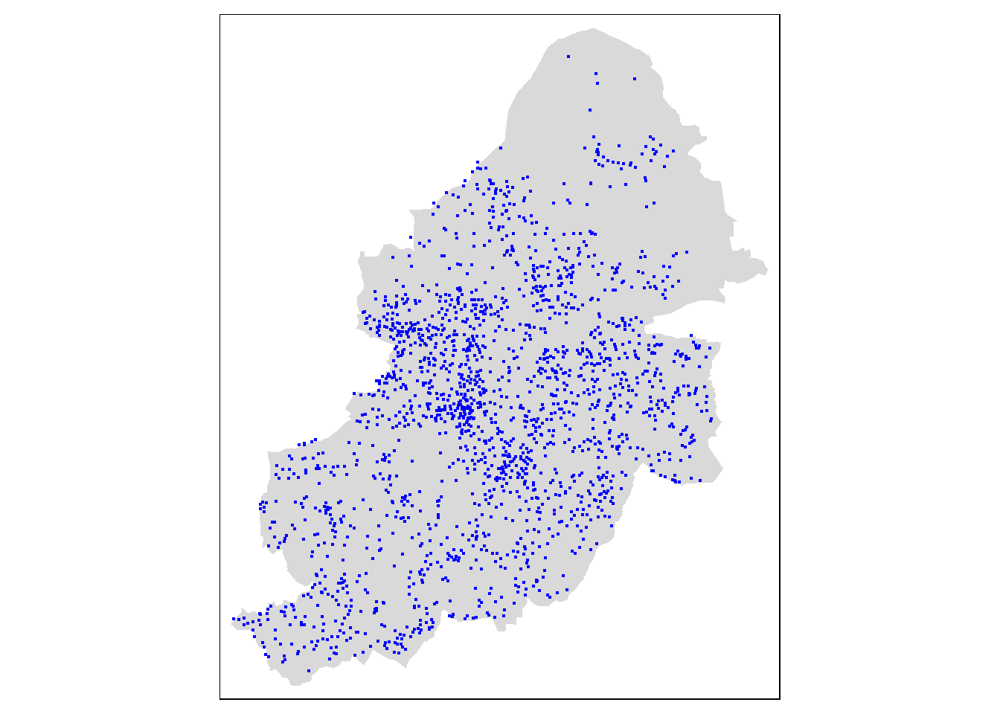
This is a correct map which shows all the weapon possession crimes across Birmingham.
The hexagon map that was previously created for the entirety of West Midlands County can be reproduced for Birmingham. The entire spatial query can be re conducted, with a different hexagon size, but as this is just a demonstration of how what the map would look like, it is kept at the same hexagon size of 500 metres. The only adjustment made in the map design is the breaks have been changed to fit the crime rates for Birmingham, where values range from 0 to 28 instead of 0 to 631.
#Clip data to fit Birmingham
honeycomb_grid_birmingham <- honeycomb_grid_wm |>
st_intersection(LA_Birmingham)
#Create detailed map to show the number of weapons crimes in Birmingham
tm_shape(LA_Birmingham) +
tm_borders(lwd=2,
col = 'black',
alpha = 1) +
tm_shape(honeycomb_grid_birmingham) +
tm_fill(col = "weaponcrime_rate",
palette = c("#009900", "#ffff00", "#ffcc00", "#ffa600", "#ff7300", "#ff4d00", "#ff2600", "#ff0000"),
style = "fixed",
n=8,
breaks = c(0,0.1,0.5,1,1.5,2,5,10,28),
title = "Weapon Possession Crime Rate per 1000 people",
id = "grid_id",
showNA = FALSE,
alpha = 0.6,
popup.vars = c("Weapon Possession Crime Rate per 1000 people: " = "weaponcrime_rate"),
popup.format = list(weaponcrime_rate = list(format = "f", digits = 0))) +
tm_borders(col = "grey40",
lwd = 0.7) +
tm_layout(main.title = "Weapon Possession Crime Rate in Birmingham - 2023",
main.title.fontface = 2,
fontfamily = "Mukta",
legend.outside = TRUE,
frame = FALSE,
legend.position = c("left", "top"),
legend.title.size = 1,
legend.title.fontface = 2) +
tm_compass(type = "arrow",
position = c("right", "top")) +
tm_scale_bar(breaks = c(0,2.5,5,7.5,10),
position = c("left", "top")) +
tm_credits("Data Source: ONS, West Midlands Police, WorldPop",
position = c('right', 'bottom'),
fontface = 'italic',
size = 0.5)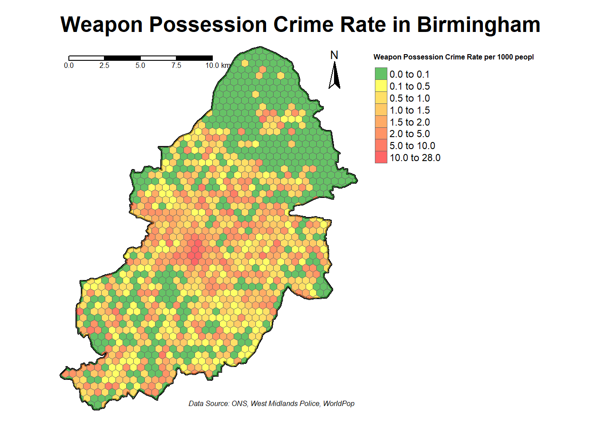
This is effectively a zoomed in version of the original hexagon map, clearly showing that central Birmingham and west Birmingham seem to have the highest crime rates, with north Birmingham seeing a small number of weapon crimes occurring, indicated by the large number of green hexagons.
Unemployment and Weapon Crime in Birmingham
As stated at the start of the previous section, unemployment in Birmingham will be studied alongside weapon possession.
In order to conduct this, the unemployment data by ward from the 2021 census (downloaded from NOMIS) needs to be loaded and configured in R. The dataset needs to be re coded to create a variable showing the percentage of people who have never worked in each ward. This could be combined with those who said they had not worked in the last 12 months, HOWEVER the 2021 census took place just after the 2020 COVID-19 lockdown, where many people were out of work in that period, so just using ‘unemployment: never worked’ will be the most reliable data. Additionally, these people are most likely to have stayed unemployed instead of starting work like the 12 month category.
#Load dataset which contains unemployment data
unemployment_input <- read.csv("ts065/census2021-ts065-ward.csv")
#Recode dataset to create a variable showing % of people who have never worked in each ward
unemployment <- data.frame(ward_code=unemployment_input$geography.code,
Unemployment_perc=(unemployment_input$Employment.history..Not.in.employment..Never.worked/unemployment_input$Employment.history..Total..All.usual.residents.aged.16.years.and.over.not.in.employment.the.week.before.the.census)*100)
#Save dataset to workspace
write.csv(unemployment, "unemployment_data_ward.csv", row.names=F)The .csv file created with unemployment percentage of each ward needs to be merged to the large spatial data frame which contains the shapes of all of the wards in Birmingham.
#Merge unemployment data to the main spatial file
Ward_Birmingham_Census<- merge(Wards_Birmingham, unemployment, by.x="WD23CD", by.y="ward_code", all.x=T)
#Replace all NAs with 0
Ward_Birmingham_Census[is.na(Ward_Birmingham_Census)] = 0
View(Ward_Birmingham_Census)
#All has merged correctlyBy viewing the dataset, it is easy to determine whether the columns have merged correctly. In each dataset there is a column for the ward code identifier, so it is specified in R that these two columns are the merging point of the two datasets.
With these preparation tasks being completed, a map can be produced to show unemployment percentages across Birmingham, with a layer of dots on the map to indicate where weapon possession crimes took place in 2023, as shown below. Breaks have been appropriately set by viewing the distribution of unemployment data
#Choropleth map of weapon crime dots and unemployment percentage across wards
tm_shape(Ward_Birmingham_Census) +
tm_fill(col = "Unemployment_perc",
style = "fixed",
palette = c("#dadaeb", "#bcbddc", "#9e9ac8", "#807dba", "#6a51a3", "#4a1486"),
n = 6,
breaks = c(17, 29, 33, 36, 43, 54, 67),
title = "% of Unemployed residents in Ward") +
tm_borders(lwd=0.4,
col = 'black',
alpha = 0.8) +
tm_shape(LA_Birmingham) +
tm_borders(lwd=2,
col = 'black',
alpha = 1) +
tm_shape(weapons_birmingham_2023)+
tm_dots(col = 'red',
size = 0.05) +
tm_layout(main.title = "% of Unemployed Residents and Weapon Crimes in Birmingham",
main.title.fontface = 2,
fontfamily = "Mukta",
legend.outside = TRUE,
frame = FALSE,
legend.outside.position = "right",
legend.title.size = 1,
legend.title.fontface = 2) +
tm_compass(type = "arrow",
position = c("right", "top")) +
tm_scale_bar(breaks = c(0, 2.5, 5, 7.5, 10),
position = c("left", "top")) +
tm_credits('Data source: West Midlands Police, ONS, Nomis',
fontface = 'italic',
align = 'right',
size = 0.5)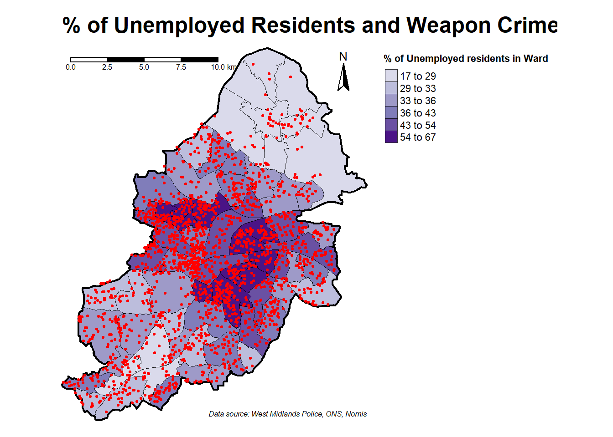
Red dots indicate each weapon possession crime which took place in 2023. The map clearly shows that the areas with low unemployment rates have a low number of weapon crimes, including all the wards in Sutton Coldfield, and the ward of Bourneville & Cotteridge. There are many areas with high unemployment and a high number of crimes closer to the city centre, including the wards of Handsworth and Small Heath.
Point Pattern Analysis
Point Pattern Analysis techniques, such as Kernel Density Estimation (KDE) can help to view whether weapon crimes are concentrated in certain areas of Birmingham statistically. KDE presents a heat map displaying the distribution between central areas (kernels) and their neighbouring regions. This is a useful technique to understand the clustering and concentration of weapon crimes using point data not aggregated to spatial units.
The spatial data needs to be converted to a ppp format from a sf (simple features) format, using the ‘spatstat’ package to conduct the KDE.
#Sf to ppp
window = as.owin(LA_Birmingham)
birmingham_weapon_crime_ppp <- ppp(st_coordinates(weapons_birmingham_2023)[, 1],
st_coordinates(weapons_birmingham_2023)[,2],
window = window)Warning: 29 points were rejected as lying outside the specified windowWarning: data contain duplicated pointsIt is a good idea to inspect this ppp dataset.
#Inspect
plot(birmingham_weapon_crime_ppp)Warning in plot.ppp(birmingham_weapon_crime_ppp): 29 illegal points also
plotted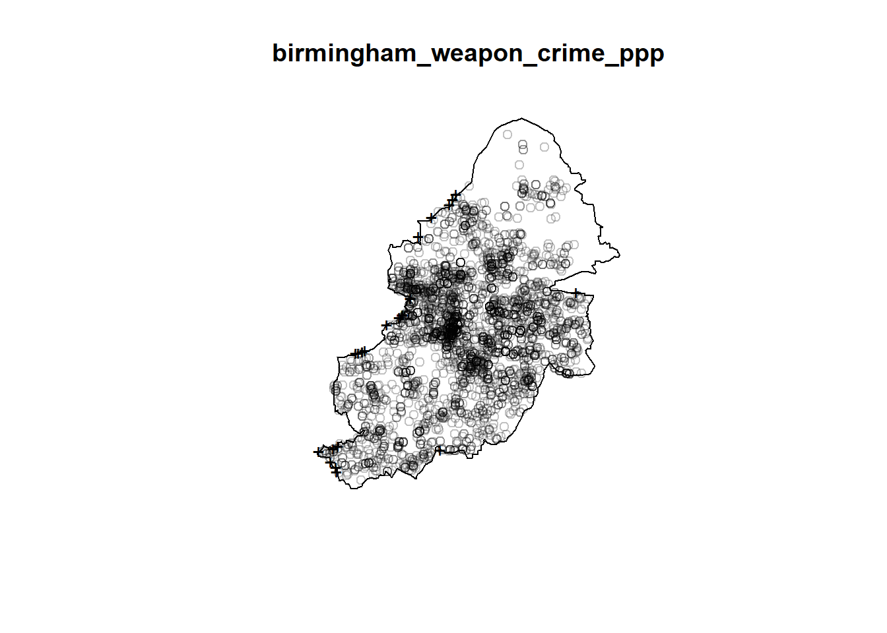
The warning suggests that there are duplicated points in the data, where weapon possession crimes have occurred in the same place. To fix this, an offset can be added to the points to remove any duplication issues.
#Check for duplicates
anyDuplicated(birmingham_weapon_crime_ppp)[1] TRUE#Count number of duplicated points
sum(multiplicity(birmingham_weapon_crime_ppp) > 1)[1] 1935#Add offset to points
birmingham_weapon_crime_ppp_jitter <- rjitter(birmingham_weapon_crime_ppp,
radius = 5,
retry = TRUE,
nsim = 1,
drop = TRUE)
#Check for duplicates
anyDuplicated(birmingham_weapon_crime_ppp_jitter)[1] FALSEBy doing this all duplication warnings have been resolved.
Each crime point needs to be fitted to a Gaussian kernel bandwidth. The Gaussian method is the most commonly used, but there are other types of bandwidths available. A sigma value needs to be determined for each crime point kernel to determine the radius of the bandwidth, helping to define which points can be placed in the clusters. The value chosen for this study is 800 metres. This value was selected to ensure a sufficiently smooth density distribution was created and that no key features in the data were distorted.
#Clip by Birmingham outline to raster
#800m sigma value
kde_800g_raster <- density.ppp(birmingham_weapon_crime_ppp_jitter, sigma = 800) |>
rast()
#Add CRS
crs(kde_800g_raster) <- "epsg:27700"
#Check CRS
st_crs(kde_800g_raster)Coordinate Reference System:
User input: OSGB36 / British National Grid
wkt:
PROJCRS["OSGB36 / British National Grid",
BASEGEOGCRS["OSGB36",
DATUM["Ordnance Survey of Great Britain 1936",
ELLIPSOID["Airy 1830",6377563.396,299.3249646,
LENGTHUNIT["metre",1]]],
PRIMEM["Greenwich",0,
ANGLEUNIT["degree",0.0174532925199433]],
ID["EPSG",4277]],
CONVERSION["British National Grid",
METHOD["Transverse Mercator",
ID["EPSG",9807]],
PARAMETER["Latitude of natural origin",49,
ANGLEUNIT["degree",0.0174532925199433],
ID["EPSG",8801]],
PARAMETER["Longitude of natural origin",-2,
ANGLEUNIT["degree",0.0174532925199433],
ID["EPSG",8802]],
PARAMETER["Scale factor at natural origin",0.9996012717,
SCALEUNIT["unity",1],
ID["EPSG",8805]],
PARAMETER["False easting",400000,
LENGTHUNIT["metre",1],
ID["EPSG",8806]],
PARAMETER["False northing",-100000,
LENGTHUNIT["metre",1],
ID["EPSG",8807]]],
CS[Cartesian,2],
AXIS["(E)",east,
ORDER[1],
LENGTHUNIT["metre",1]],
AXIS["(N)",north,
ORDER[2],
LENGTHUNIT["metre",1]],
USAGE[
SCOPE["Engineering survey, topographic mapping."],
AREA["United Kingdom (UK) - offshore to boundary of UKCS within 49°45'N to 61°N and 9°W to 2°E; onshore Great Britain (England, Wales and Scotland). Isle of Man onshore."],
BBOX[49.75,-9.01,61.01,2.01]],
ID["EPSG",27700]]The KDE raster layer for weapon possession crimes can now be mapped as shown below. The palette is chosen appropriately from the ‘RColorBrewer’ package, and the style is chosen as ‘cont’ as this provides the most aesthetically pleasing map where the colour gradient changes smoother than a standard method.
#Map kde raster
tm_shape(kde_800g_raster) +
tm_raster(col = "lyr.1",
palette = 'YlOrRd',
style = 'cont',
title = "KDE Layer") +
tm_shape(Wards_Birmingham) +
tm_borders(lwd=0.5,
alpha=0.5,
col = 'black') +
tm_shape(LA_Birmingham) +
tm_borders(lwd=2,
alpha=1,
col = 'black') +
tm_layout(main.title = "KDE Heatmap of weapon crimes in Birmingham",
main.title.fontface = 2,
fontfamily = "Mukta",
legend.outside = TRUE,
frame = FALSE,
legend.outside.position = "right",
legend.title.size = 1,
legend.title.fontface = 2) +
tm_compass(type = "arrow",
position = c("right", "top")) +
tm_scale_bar(breaks = c(0, 2.5, 5, 7.5, 10),
position = c("left", "top")) +
tm_credits('Data source: West Midlands Police, ONS',
fontface = 'italic',
align = 'right',
size = 0.5)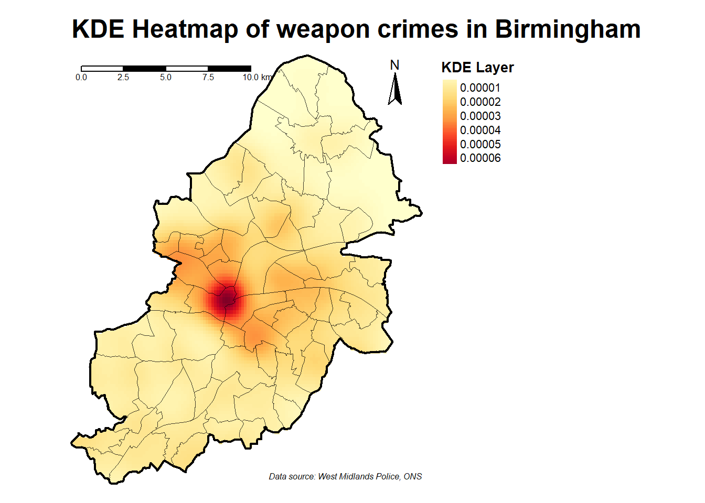
There is a clear high-density area in the city centre, with this area spreading out across most of the wards in Central Birmingham. In contrast Sutton Coldfield and wards in the south have low KDE values, indicating crimes are not clustered in these areas.
Link to train stations
As train stations are entry nodes for people unfamiliar to a city to enter, crime can concentrate in these locations, so crimes taking place within a certain proximity of train stations in Central Birmingham can be mapped.
Using the KDE analysis from the previous section, wards which lie in Central Birmingham have been selected for this map and its analysis, as most crimes tend to concentrate here.
Firstly all wards in the central cluster area need to be extracted from the Ward_Birmingham_Census spatial data frame. By viewing this dataset, the names of the wards in the centre and what rows they are in the dataset can be selected for extraction.
#Extract out wards in the central cluster area
rows_to_extract_2 <- c(3,4,5,8,9,10,14,20,21,25,26,28,30,34,36,38,39,40,50,51,52,53,54,65,66,68,69)
Ward_Central_Birmingham_Census <- Ward_Birmingham_Census[rows_to_extract_2, ]Again, it is a good idea to check if this has been performed correctly.
#Quick check of shape
tm_shape(Ward_Central_Birmingham_Census)+
tm_fill() +
tm_borders()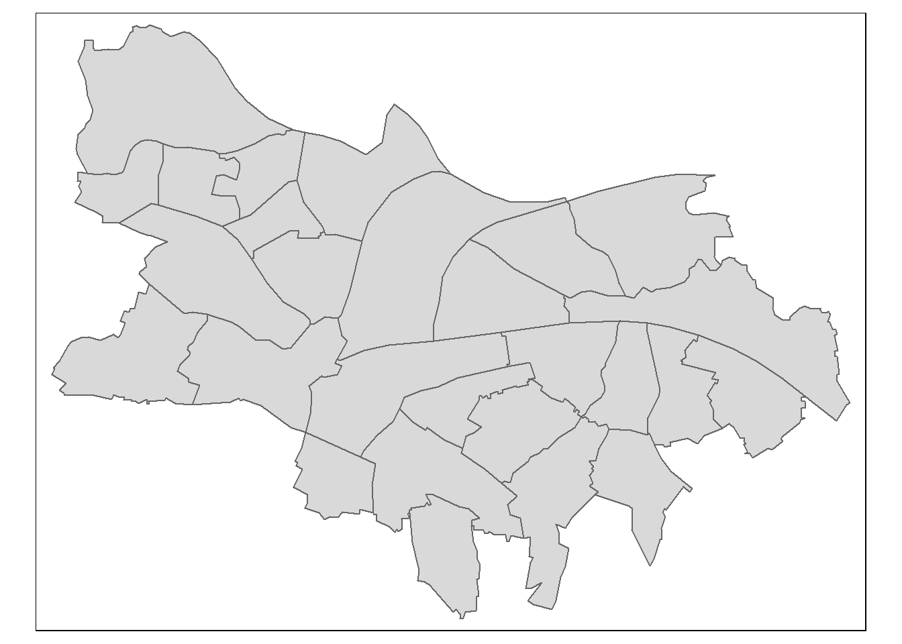
If the shape looks like this, the extraction has been performed correctly.
The outline of Central Birmingham needs to be specified for the Overpass API to extract train stations in the area from OpenStreetMap.
#Union of data
central_birmingham_outline <- Ward_Central_Birmingham_Census |>
st_union()
plot(central_birmingham_outline)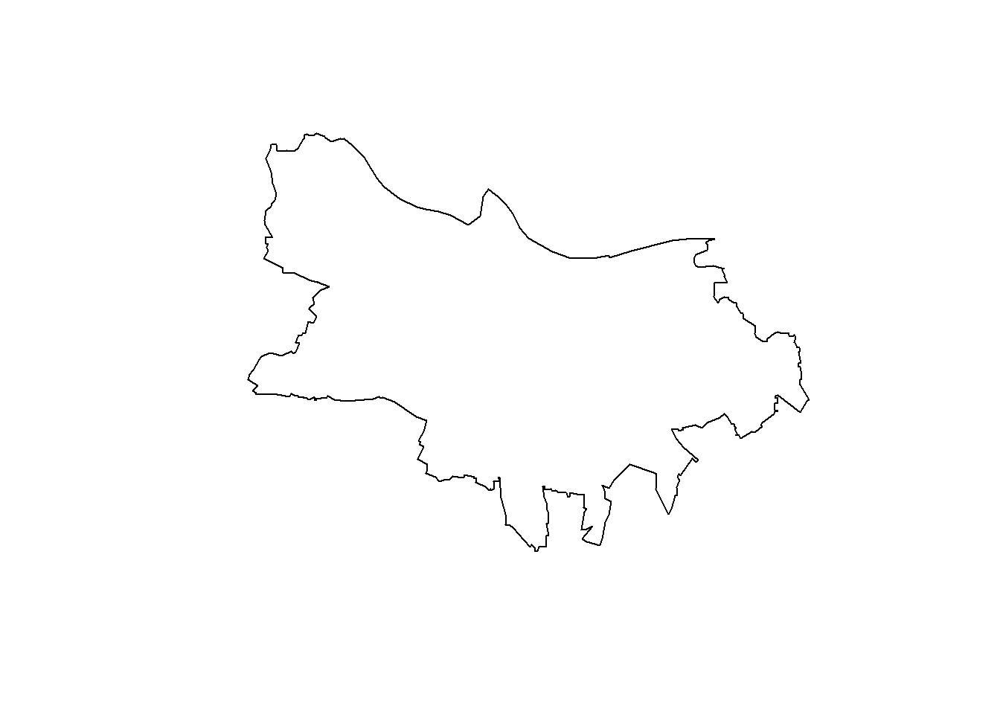
In order to extract the railway station points in this area, the latitude, longitude and bounding box of the outline need to be extracted for the Overpass API to extract the station data from OpenStreetMap.
#Extract latitude, longitude bounding box from central Birmingham outline
p_bbox <- st_bbox(st_transform(central_birmingham_outline, 4326))Next, a function in the Overpass API needs to be created which is able to extract stations from Open StreetMap in the defined area.
#Call OverPassQuery function
stations_central_birmingham_osm <- opq(bbox = p_bbox) |>
#Add key and values to sf
add_osm_feature(key = "public_transport", value = "station") |>
osmdata_sf()Now the railway station points can be extracted. Steps such as clipping the data to the outline of central Birmingham, and selecting relevant attributes of each station, such as the name, needs to be conducted here aswell.
#Extract only points
stations_central_birmingham_osm <- stations_central_birmingham_osm$osm_points |>
#Add projection information
st_set_crs(4326) |>
#Reproject to BNG
st_transform(27700) |>
#Clip to central Birmingham outline
st_intersection(central_birmingham_outline) |>
#Select relevant attributes
dplyr::select(c("osm_id", "name", "network", "operator", "public_transport", "railway"))Warning: attribute variables are assumed to be spatially constant throughout
all geometriesThese points can now be inspected to see which stations from OSM have been extracted, and if any modifications need to be made.
#Inspect these points
plot(stations_central_birmingham_osm)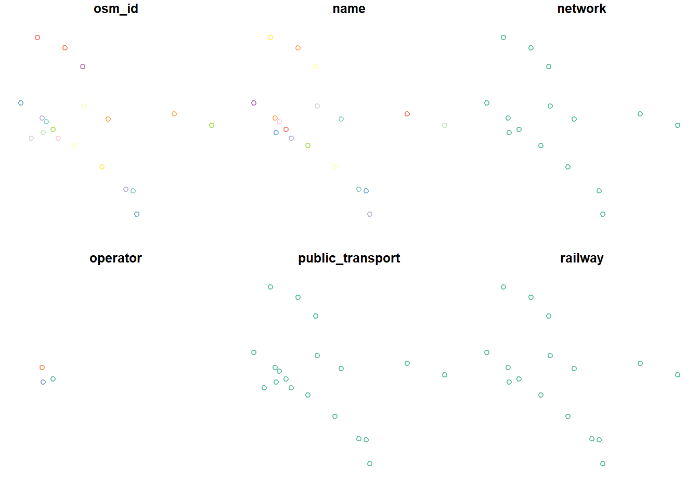
This study is only concerned with railways stations not all public transport nodes, so these are extracted from this data frame.
#Extract train stations
stations_central_birmingham_osm <- stations_central_birmingham_osm |>
filter(railway == "station")Now these stations can be mapped across Central Birmingham to see if all steps have been conducted correctly, and to visualise the distribution of stations.
#Add Central Birmingham outline
tm_shape(Ward_Central_Birmingham_Census) +
tm_fill() +
tm_borders() +
#Add station data
tm_shape(stations_central_birmingham_osm) +
tm_dots(col = "black",
size = 0.1) +
#Add other map info
tm_compass(type = "arrow",
position = c("right", "top")) +
tm_scale_bar(breaks = c(0, 1, 2, 3, 4, 5),
position = c("left", "bottom")) +
tm_credits("© OpenStreetMap contributors, ONS")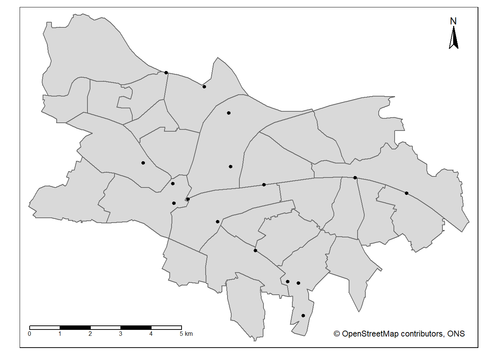
Now the proximity calculation of the number of weapon crimes occurring within a fixed distance of each station can be conducted. Firstly a single geometry needs to be created for the data.
#Create a single geometry
stations_central_birmingham_osm_compare <- stations_central_birmingham_osm |>
st_union()For this study, a 500 metre buffer will be created around each station to count the number of crimes occurring in this radius. 500 metres is chosen as this is a small enough zone around each station where people may immediately travel around upon entering Birmingham.
#Generate a 500m buffer
station_500m_buffer <- stations_central_birmingham_osm |>
st_buffer(dist = 500)This buffer can now be used to count the number of weapon possession crime points which fall within the buffer region.
#Intersect buffers with weapon possession crimes and work out number of crimes in each buffer
station_500m_buffer$`Total Count` <- lengths(st_intersects(station_500m_buffer, weapons_birmingham_2023))Now a final map can be produced which shows the number of weapon crimes occurring within 500 metres of each railway station in Central Birmingham. This map uses proportionally sized dots using the ‘tm_bubbles’ function to indicate how many crimes occur around each station. Additionally, these dots are overlayed on a map of unemployment rates across Central Birmingham.
tm_shape(Ward_Central_Birmingham_Census)+
tm_borders(lwd = 0.5,
col = 'black',
alpha = 1)+
tm_fill(col = "Unemployment_perc",
style = "fixed",
palette = c("#f4f9fd", "#9fccf0", "#5ba7e6", "#2182d2", "#16588e", "#0b2e4a"),
n = 6,
breaks = c(0, 30, 34, 36, 43, 54, 67),
title = "% of unemployed residents in Ward") +
tm_shape(station_500m_buffer) +
tm_bubbles(size = "Total Count",
col = "red",
n=8,
style = "quantile",
legend.size.show=TRUE,
title.col = "Count",
border.col = "black",
border.lwd = 0.1,
border.alpha = 0.1)+
tm_layout(main.title = "Number of Weapon Crimes within 500 metres of a railway station",
main.title.fontface = 2,
fontfamily = "Helvetica",
legend.outside = TRUE,
frame = FALSE,
legend.position = c("left", "top"),
legend.title.size = 1,
legend.title.fontface = 2) +
tm_compass(type = "arrow",
position = c("right", "bottom")) +
tm_scale_bar(breaks = c(0,1,2,3,4,5),
position = c("left", "bottom")) +
tm_credits("© OpenStreetMap contributors, ONS, West Midlands Police",
position = c('right', 'top'),
fontface = 'italic',
size = 0.5)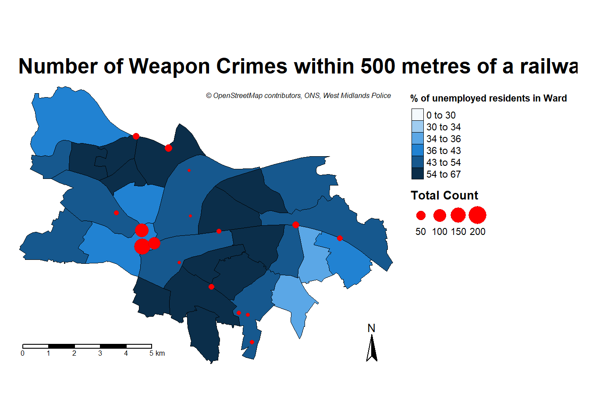
Although there is theoretical evidence to suggest crimes cluster around stations, this is not the case for 13/16 of the stations having low weapon crime counts. However, three stations: Birmingham New Street, Birmingham Snow Hill, and Birmingham Moor Street, in the city centre have a cluster of weapon crimes occurring within a 500m radius. This makes sense as these are the three stations which connect Birmingham to other major cities in the UK, such as Manchester and London, being a node for people unfamiliar to Birmingham to enter the city.
A major caveat to this is that weapon possession crimes are statistically more likely to occur in a city centre where large groups of people form, and that the large number of crimes by the central stations is a product of this.
Conclusions and Final Remarks
In conclusion, this social atlas shows that weapon possession crimes are unevenly distributed in West Midlands County, with clear clusters being identified. The report showed that in certain areas, (Central Birmingham & Solihull) using GWR, there is a positive correlation between the IMD and weapon crime. Additionally, there appears to be a link between unemployment and weapon crime, but it is less clear whether weapon crimes cluster around railway stations. The findings illustrate that there are many factors that link to weapon possession crimes, and that local councils, especially those in Birmingham need to provide strategies to prevent crimes from rising even further.
It is very important to note that this is not a conclusive study of every single factor which is linked to weapon possession crimes across the region, as for example, population density and household income, among many other factors, need to be accounted for when producing a wider study of the issue. Some of these variables may help to explain some of the trends found in this report, such as why crimes are concentrated in city centres.
Overall, I hope this report provides an overview of weapon crime issues in West Midlands County, and also an overview of different geospatial techniques that can be conducted in RStudio on geospatial data, and large data sets with geographic elements present.
References
Allen, G., H. Carthew and Y. Zayed (2023) ‘Knife crime statistics England and Wales’, London: House of Commons, https://commonslibrary.parliament.uk/research-briefings/sn04304/.
Anselin, L. (1995) ‘Local Indicators of Spatial Association—LISA’, Geographical Analysis, 27, 2, 93-115, https://onlinelibrary.wiley.com/doi/abs/10.1111/j.1538-4632.1995.tb00338.x.
Bonnier, A., M. Finné and E. Weiberg (2019) ‘Examining land-use through GIS-Based kernel density estimation: a Re-Evaluation of legacy data from the berbati-limnes survey’, Journal of Field Archaeology, 44, 2, 70-83, https://www.tandfonline.com/doi/full/10.1080/00934690.2019.1570481.
Brunsdon, C., A.S. Fotheringham and M.E. Charlton (1996) ‘Geographically Weighted Regression: A Method for Exploring Spatial Nonstationarity’, Geographical Analysis, 28, 4, 281-298, https://onlinelibrary.wiley.com/doi/abs/10.1111/j.1538-4632.1996.tb00936.x.
Carter, R.L. and K.Q. Hill (1976) ‘The Criminal’s Image of the City and Urban Crime Patterns’, Social Science Quarterly, 57, 3, 597-607, https://www.sciencedirect.com/book/9780080246338/the-criminals-image-of-the-city.
Cheshire, J.A. and P.A. Longley (2011) ‘Identifying spatial concentrations of surnames’, International Journal of Geographic Information Science, 26, 2, 309-325, https://www.tandfonline.com/doi/full/10.1080/13658816.2011.591291.
Chiu, S. (1991) ‘Bandwidth Selection for Kernel Density Estimation’, The Annals of Statistics, 19, 4, 1883-1905, https://www.jstor.org/stable/2241909.
Clement, M. (2010) ‘Teenagers under the knife: a decivilising process’, Journal of Youth Studies, 13, 4, 439-451, https://www.tandfonline.com/doi/full/10.1080/13676261003802406.
Getis, A. and J.K. Ord (1992) ‘The Analysis of Spatial Association by Use of Distance Statistics’, Geographical Analysis, 24, 3, 189-206, https://onlinelibrary.wiley.com/doi/10.1111/j.1538-4632.1992.tb00261.x.
Gimond, M. (2023) Intro to GIS and spatial analysis, ‘Chapter 13: Spatial autocorrelation’, https://mgimond.github.io/Spatial/spatial-autocorrelation.html.
Haylock, S., T. Boshari, E.C. Alexander, A. Kumar, L. Manikam and R. Pinder (2020) ‘Risk factors associated with knife-crime in United Kingdom among young people aged 10–24 years: a systematic review’, BMC Public Health, 20, 1451, 1-19, https://bmcpublichealth.biomedcentral.com/counter/pdf/10.1186/s12889-020-09498-4.pdf.
Irvin-Erickson, Y. and N. La Vigne (2015) ‘A Spatio-temporal Analysis of Crime at Washington, DC Metro Rail: Stations’ Crime-generating and Crime-attracting Characteristics as Transportation Nodes and Places’, Crime Science, 4, 14, 1-13, https://crimesciencejournal.biomedcentral.com/articles/10.1186/s40163-015-0026-5.
Lee, S. (2019) ‘Uncertainty in the effects of the modifiable areal unit problem under different levels of spatial autocorrelation: a simulation study’, International Journal of Geographical Information Science, 33, 1, 1135-1154, https://www.tandfonline.com/doi/full/10.1080/13658816.2018.1542699.
Livings, M. and A.M. Wu (2020) ‘Local Measures of Spatial Association’ The Geographic Information Science & Technology Body of Knowledge (3rd Quarter 2020 Edition), John P. Wilson (Ed.), https://gistbok-topics.ucgis.org/AM-03-023.
Longley, P. et al. (2015) Geographic Information Science & Systems, ‘Chapter 4: Georeferencing’, pp. 77-98, https://app.knovel.com/kn/resources/kpGISSE001/toc?kpromoter=marc.
Longley, P.A., J. van Dijk and T. Lan (2021) ‘The geography of intergenerational social mobility in Britain’, Nature Communications, 12, 6050, 1-8, https://www.nature.com/articles/s41467-021-26185-z.
Rawlinson (2024) ‘Idris Elba calls for immediate ban on machetes and ‘zombie’ knives’, London: The Guardian, https://www.theguardian.com/uk-news/2024/jan/08/idris-elba-calls-for-immediate-ban-on-machetes-and-zombie-knives?ref=upstract.com.
Rengert, G.F. and B. Lockwood (2009) ‘Geographical Units of Analysis and the Analysis of Crime’, in D. Weisburd, W. Bernasco, and G.J. Bruinsma (eds) Putting Crime in its Place, New York: Springer, 109-122, https://link.springer.com/chapter/10.1007/978-0-387-09688-9_5.
Shi, X. (2010) ‘Selection of bandwidth type and adjustment side in kernel density estimation over inhomogeneous backgrounds’, International Journal of Geographic Information Science, 24, 5, 643-660, https://www.tandfonline.com/doi/full/10.1080/13658810902950625.
Thapa, R.B. and R.C. Estoque (2012) ‘Geographically Weighted Regression in Geospatial Analysis’, in Y. Murayama (ed.) Progress in Geospatial Analysis, Tokyo: Springer, 85-96, https://link.springer.com/chapter/10.1007/978-4-431-54000-7_6.
West Midlands Police (2024) ‘Compare your area’, London: Police.UK, https://www.police.uk/pu/your-area/west-midlands-police/performance/compare-your-area/?tc=BW001.
Wong, D. (2009) ‘Modifiable Areal Unit Problem’, International Encyclopedia of Human Geography, 169-174, https://www.sciencedirect.com/science/article/abs/pii/B9780080449104004752.
Wong, K. (2021) ‘Create spatial square/hexagon grids and count points inside in R with sf’, Hong Kong: Urban Data Palette, https://urbandatapalette.com/post/2021-08-tessellation-sf/.
Zhang, H., R. Zahnow, Y. Liu and J. Corcoran (2022) ‘Crime at train stations: The role of passenger presence’, Applied Geography, 140, https://www.sciencedirect.com/science/article/abs/pii/S0143622822000376.
Zhao, J., H. Zhang and J.A. Zhang (2020) ‘Gaussian kernel adaptive filters with adaptive kernel bandwidth’, Signal Processing, 166, 107270, https://www.sciencedirect.com/science/article/abs/pii/S016516841930324X.